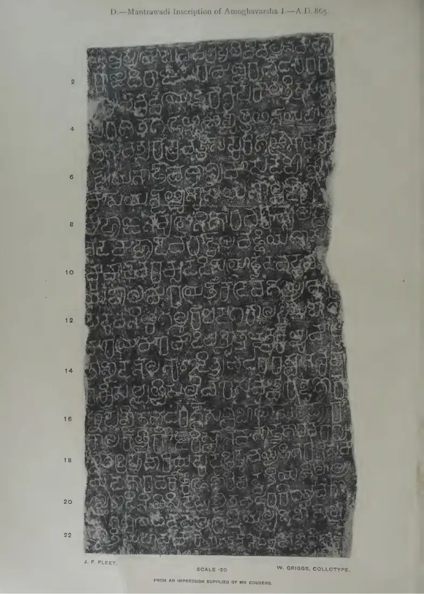
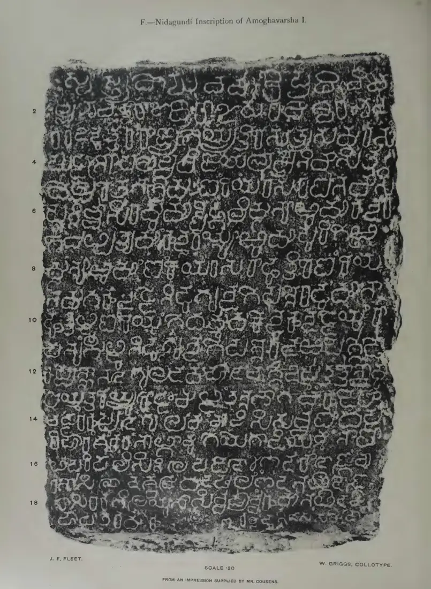

Some records of the Rāshṭrakūṭa kings of Mālkhēd :—
SOME RECORDS OF THE RASHTRAKUTA KINGS OF MALKHED.
By J. F. FLEET, I.C.S. (RETD.), PH.D., C.I.E.
(Continued from Vol. VI. page 198.)
D.— Mantrawâđi inscription of the time of Amôghavarsha I.—A.D. 865.
This inscription has been mentioned by me in Vol. III. above, p. 163, note 1. It was originally brought to my notice by Mr. Govind Gangadhar Deshpande. And I obtained ink-impressions of it in 1882. It is now edited for the first time. The collotype is from an ink-impression received in 1886 from Mr. Cousens, Superintendent of the Archæological Survey of the Bombay Presidency.
Mantrawâđi is a village about five miles towards the east-by-north from Shiggaon, the head-quarters of the Bañkâpur tâluka of the Dhârwâr district. The Indian Atlas sheet No. 42 (1827) shews it as 'Munturrehdee.' The Map of the Dhârwâr Collectorate (1874) shews it as 'Muntruwudee.' The present record seems to indicate that its original name was Elpunuse, or else Elamvalli.4 And the purport of it places both Elpunuse and Elamvalli in the Purigere district,— the Purigere three-hundred of other records. The inscription is on a
1 Read yad=yad=; the Mukundamâldâ reads yad=bhâvyaân tad=bhavatu.
2 The Mukundamâldâ reads bahumataân. 3 Read -antarê=.
4 The maps do not shew, in the neighbourhood of Mantrawâđi, any villages with names resembling these two.
stone tablet, which was found near a temple of Hanumat at Mantrawādi and is now stored in the kachèri at Shiggaon.
At the top of the stone, there are sculptures representing the goddess Lakshmî, squatting and facing full-front, with an elephant on each side, standing towards her; the tips of the trunks of the elephants, which are uplifted, meet above her head; and each of them holds, apparently, a flower over her.—The writing covers an area about 2' 0" broad by 3' 9" high, and is mostly in a state of very good preservation. In addition to the record edited and shewn in the collotype, there is one line of writing below the sculptures, which are, as usual, on a surface which projects somewhat in front of that part of the stone which bears the body of the record. It is in characters of the same type with those of the body of the record; and it gave the name of the writer: but the greater part of it is damaged and illegible; we can only recognise, at the beginning of the line Śrī-Rē(?)vayyana, and at the end likhitam, with perhaps a cross-mark below the m, as if to shew that something is to be supplied here,—namely, possibly, the aksharas, standing before the Svasti of line 1 of the body of the record, which are not wanted there and seem to be meaningless.—The characters are Kanarese, boldly formed and well executed. The size of them ranges from about " in the dha of dharmmadoļ, line 22, to about 1" in the va of goravarum, line 8; the lchi of peļchisal, line 15, and the tṭa of koṭṭar, line 17, are each about 2" high. The lingual d is not very clearly, if at all, distinguished from the dental d. As regards the palæography,—the ñ does not occur. The j occurs four times, in lines 2, 3, and 8, and is, in each case, of the old square type: the exact form aimed at in this record, is illustrated best in the jā of rājādhi, line 2, No. 2; it is a closed form, of that particular shapé from which there may have been derived, quite directly, the back-to-back j and the open j which we have in the Doddahunđi inscription of Nitimārga and Satyavākya.1 The kh occurs three times, in lines 6, 17, and 20, and again in likhitam in the line below the sculptures: in each case, it is of the later cursive type; and the form of it is practically identical with the modern form of the present day: it is seen best in the kha of akhandita, at the end of line 17. The b occurs more often, and is of the later cursive type, throughout; the intended form of it is seen very clearly in the bā of bādhā, line 16, No. 11, and is to be recognised as almost identical with the modern form of the present day. The l occurs still more freely, and is, also, of the later cursive type, throughout, including the l in likhitam in the line below the sculptures; the particular form of it aimed at in this record, is perhaps exhibited most clearly in the la of kālam, line 17, No. 2. Except in the l of rakshisal, line 15, where it is hardly to be detected, in the l, as presented in this record, we can recognise a feature which played an important part in the process by which the later cursive type of this character was evolved from the old square type, namely, the miniature representation, of the principal part of the old square character, which stands here in the centre of the later cursive character. In the development of the later character, the first step was the prolongation, with a sweep to the right, of the downstroke with which the formation of the original character ended,—a feature which is well illustrated in the Hattī-Mattūr inscription of the time of Krishṇa I.;2 that was eventually followed by a continuation of that stroke up to the top line of the writing; and, meanwhile, the principal part of the original character was diminished, rounded off, and raised, until the original leading characteristic of the old square letter was almost entirely lost. In some Kanarese fonts of the present day, it has disappeared altogether,—for instance, in the font used, in accordance with the general custom, in the Rev. Dr. F. Kittel's Kannađa-English Dictionary; on the other hand, the miniature of the principal part of the old square character is distinctly recognisable in the font used for the words presented in Kanarese characters in the compilation entitled Bombay Places and Common Official Words. In lines 7, 8, 14, 20 (twice), 21, and 22 of this record, we have a peculiar form of the m, for which at present the earliest limit is fixed by its occurrence in para-dattam=bā in line 14 of the Kanarese grant of
1 See Vol. VI. above, p. 42, and Plate.
2 Vol. VI. above, p. 160, and Plate.
Gôvinda III. of A.D. 804 ;1 it is here seen best in the mâ of nelanum=Áditya, line 14, No. 7 : it occurs again in likhitam, in the line below the sculptures, where it is formed somewhat smaller than usual, so as to mark it as a final form ; it is a character which may often be confused with one form of re, rê. The corresponding form of the v occurs, but not very clearly, in the upper v of sarvva, line 16, No. 10.— The language is Kanarese, of the archaic type, in prose. In sásanamum, line 9-10, the copulative ending uñ is attached to the usual archaic ending of the nominative singular neuter in m, m ; on the other hand, in line 8 it is doubtful whether the m has been retained,— mahájanamuñ, or whether it has been softened into v,— mahájanavuñ. In line 20 we seem to have the accusative singular neuter in v,— dharmavañ ; while, on the other hand, in line 17 we have clearly the more archaic form in m,— sthánaman. In line 14, in sthánamuvañ or sthánavuvañ, the m, m, of the copulative suffix, with the accusative ending after it, seems distinctly to have been softened into v ; but, whether the m of sthánañ, sthánam, has been retained before it, or has been softened into v, is doubtful. Line 10 gives us—(unless we assume a mistake of s for ś)— dise, as another variant of diše, dese, ‘a quarter or point of the compass, direction, region, side ;’ line 12 gives nirù-gal, which seems clearly to mean ‘a set-up stone,’ nirù being, no doubt, connected with niri, 1, ‘to be properly arranged or prepared, to be ready,’ from which we have nirisu, ‘to put down, place, arrange, adjust, prepare,’ which occurs in line 20 in respect of the setting up of the stone itself that bears the record ;2 line 15 gives pelchisu, as a variant of perchisu, pechchisu, ‘to cause to increase, to multiply’ ;3 and line 21-22 gives brahmáti, as a variant of brahmati, brahmêti, = brahmahatyá, ‘the killing of a Bráhman.’— The orthography does not present anything calling for comment.
The inscription refers itself to the reign of the Ráshtrakúṭa king Amôghavarsha I.,— son and successor of Gôvinda III.,— who was on the throne from A.D. 814 or 815 to A.D. 877 or 878. And it mentions a feudatory of his, named Kuppêya,4 who was governing the Purigere district. The object of it was to record the grant of some lands to a priest named Gôkarṇapañditabhatāra. The sculptures at the top of the stone mark the record as a Vaishṇava record, and thus shew that the donee was a Vaishṇava. And it seems worth noting that one of the donors was a Gorava or Śaiva priest.
The record is dated on the full-moon day of Vaiśākha of the Pārthiva sañvatsara, coupled with Śaka-Sañvat 787. Whatever system of the cycle is applied, the Śaka year is the expired year.5
1 Ind. Ant. Vol. XI. p. 127, and Plate.
2 Compare i sásanaman=nirisidar, “they placed, adjusted, or set up, this charter,” in the Daṇāpur inscription (Ind. Ant. Vol. XII. p. 223, text line 12).— Compare, also, nirisida kinnari-galla gudde nâlku in an inscription at Naregal in the Rôn tâluka, Dhârwâr (Jour. Bo. Br. R. As. Soc. Vol. XI. p. 229, text lines 51, 53, 55), and nirisida gudde nâlku (ibid. p. 230, line 57). As regards the first of these passages, the occurrence of the combination kinnarigal (line 51) or kinnarigal (lines 53, 55) in a record at a place named Naregal,— which is mentioned as Hiriya-Nareyangal in a neighbouring record (ibid. p. 248, line 20-21), and the name of which would often be written Narigal in the present day,— led me to think that the text referred to a smaller or later Naregal, distinguished from Hiriya-Nareyangal ; but I now see that we should interpret the text as meaning, not “four heaps of stones, above graves of Kim-Narigal,” etc., but “four set-up heaps of stones (bearing representations) of female Kinnaras together with a linga and ascetics and a cow.”
3 Compare pel-dore, ‘the great river,’ for the more usual per-dore in the Mulgund inscription of A.D. 975 ; Vol. VI. above, p. 259, text line 5.
4 The vowel of the penultimate syllable is apparently to be taken as the long é, on the analogy of the é in Bankêya, which is marked as long by the metre in line 53 of the inscription at Konnûr (Vol. VI. above, p. 33); but it is not quite certain that the long é is not used there simply to suit the metre. The name of Bankêya or Bankeya appears also as Banka, in Bankêša (Vol. VI. above, p. 30, text line 19). So, also, the name Kuppêya or Kuppeya appears— (but in the case of another person)— as Kuppa, and Kuppaṇa, in the Niðagundi inscription, F. below, page 214.
5 By the luni-solar system of the cycle, northern or southern, the Pārthiva sañvatsara was Śaka-Sañvat 788, current,=A.D. 865-66. By the mean-sign system, it began on the 27th September, A.D. 864, Ś.-S. 786 expired, and ended on the 23rd September, A.D. 865, Ś.-S. 757 expired.
And the corresponding English date is the 14th April, A.D. 865, on which day the full-moon conjunction occurred at about 20 hrs. 54 min. after mean sunrise (for Ujjain).
TEXT.1
1 [Ôm]2 Svasty=Amôghavarsha śriprithivívallabha mahâ-
2 rájádhirája paramésvara bhatárara r[â]-
3 [jy]-ábhivríddhiyol=Śaka-n ř i p a - k á l-â t i t a - s a i n v a-
4 tsara-šataṅgal=él-núř=eñbhatt-élâneya Pártthi-
5 va-samvatsaram pravarttise Purigere-náða[m] Ku-
6 ppêyan3=ále Vaisákha-másada paurṇna-
7 máse(si)y-and-Elpunuseya nálvadimba-
8 r=mmahájanamu(?vu)m4 Moni-goravarum Múlasthâ-
9 nada Mahâdêvar=álv=Elañvalñiya sása[na]-
10 mum=â dêvara múða-diseyol=múða vaððava . 5
11 ya pola mêreye ternka dêvam-geyye mêre
12 paðuva niřu-gal=mêre baðaga Kálabe(?)ya pola
13 m[é]reye mêre-máði enbhattay-váttar=kk[e]yyum=âřu
14 tóṇtada nelanum=Āditya-bhatárara sthânamu(?vu)vam6
15 rakshisal=pelchisal=ivarê samartthar=endu Gôka-
16 rṇna-paṇðita-bhatárargge sarvva-báðhâ-pariháram
17 kálam kalchi koṭtar=ī sthânaman=álva goravar=akha-
18 nðita-brahmacháriy=apudu brahmacharyya-hínaran=í
sama-
19 yada goravarkkal=kalevor=ī paddhatiyam śilâ-lé-
20 khe-máði nirisidar=ppaṇðita-bhatárar=ī dharmmavam7 ká-
21 doṅg=aśvamêdhada phala[m] alñyal-baṅgevoṅge8 bra-
22 hmâtiya pápam=akkum [||*] Nágadêvan=í dharmmadol=
gôshtñ(shthi) â(?)dom9 [||*]
TRANSLATION.
[Ôm]! Hail! In the increase of the sovereignty of Amôghavarsha (I.), the favourite of Fortune and of the Earth, the Mahárájádhirája, the Paramésvara, the Bhatára,— while the Párthiva samvatsara, the seven hundred and eighty-seventh (year of) the centuries of years that have gone by from the time of the Śaka king, was current,— while Kuppêya10
1 From the ink-impressions.
2 There seems to have stood here, originally, a plain symbol for the word Ôm, on which there were afterwards overlaid two aksharas, which seem to be mági, apparently belonging to the line of writing below the sculptures above the body of the record (see page 199 above).
3 Regarding this name, see note 4 on page 200 above.
4 There is a small mark between the consonant and the vowel, half-way down the consonant, which makes it probable that m was written but was not fully engraved; so, also, in sthânamu(?vu)vam, line 14, and perhaps, but not so probably, in dharmmavam, line 20.
5 One akshara is lost here. The consonant must, apparently, be either n or n. The vowel must be either i or e. There is a word odðavane, 'array, preparation,' which, however, does not seem suitable here. Otherwise, I can only think of vaððavane, for odða-mane; but I do not know whether the m of mane ever changes into v; and this word also, meaning "the house or abode of the Oððas," does not seem altogether suitable.
6 See note 4 above.
7 See note 4 above.
8 Read bagevoṅge.
9 The akshara before the dom is doubtful. And the dictionaries do not give any such word as gôshthi or gôshthin in the sense of 'president of an assembly,' which clearly seems to be implied. Perhaps what was intended was gôshthikan=ádom.
10 See note 4 on page 200 above.
was governing the Purigere district,— on the day of the full-moon of the month Vaisákha:—
(Line 7) The forty Mahájanas of Elpunuse, and the Gorava Moni, and the managers1 of Elainvaļli which belongs to the god Mahâdėva (Šiva) of the Mūlasthâna,2— saying “ He, indeed, is able3 to protect (the property), and to increase it,”— gave to the honourable Gôkarnapanđita, free from all molestation, having laved his feet, eighty-five mattars of cultivable land, and six plots of garden-land, and the property of Ādityabhatāra, on the east side of that same god, making the boundaries to be on the east, the . . . field; on the south, the cultivable land of the god; on the west, a stone that was (then) set up; and, on the north, the field of Kâlabe(?).
(L. 17) Let the Goravas who manage this property be such as keep unbroken the vow of continence; the Goravas of this community shall reject those who are wanting in continence. The honourable panđit4 put this precept into (the form of) a writing on stone, and set it up.
(L. 20) To him who protects this religious grant, there shall accrue the reward of performing an aśvamédha-sacrifice; to him who (even) thinks of destroying it, there shall attach the guilt of slaying a Brâhman !
(L. 21) Nâgadėva was the president of the meeting in the matter of this religious grant.
E.—Sirûr inscription of the time of Amôghavarsha I.— A.D. 866.
This inscription was brought to notice and edited by me in 1883, in the Ind. Ant. Vol. XII. p. 215 ff., from an ink-impression obtained in 1882. A lithograph of it was not given then. And, for that and other reasons, it is now re-edited. The collotype which accompanies the present revised version of the record, is from an ink-impression which Mr. Cousens was good enough to obtain for me in 1898, the original impression having suffered some damage and become unsuitable for reproduction.5
Sirûr is a village about sixteen miles west-by-north from Nawalgund, the head-quarters of the Nawalgund tâluka of the Dhârwâr district. The Indian Atlas sheet No. 41 (1852) shews it as ‘Serroor.’ And the Map of the Dhârwâr Collectorate (1874) shews it as ‘Siroor.’ The record gives its name in the older form of Śrivûra, which may possibly be a mistake for Śrivûra, with the long i. And the purport of it places Sirûr in the Beľvola three-hundred district. The inscription is on a stone tablet somewhere on the south of the húđe or village-bastion at Sirûr.
I have no information as to whether there are any sculptures at the top of the stone.— The writing covers an area about 3' 7" broad by 3' 3" high. The extant portion of it is in a fairly good state of preservation, and can be read without any uncertainty, throughout. But, before it came to notice at all, a portion of it had been broken away and lost at the upper left-hand corner, in consequence of which there is missing a part of the text ranging from fifteen or sixteen aksharas in line 1, to one akshara in line 7. And, since the time when the original impression was obtained by me, some damage has been done to the lower left-hand corner, whereby we have lost one complete akshara at the beginning of lines 22, 23, and 24.— The characters are Kanarese, boldly formed and well executed. They contrast rather curiously with those of the Nîlgund inscription, edited in Vol. VI. above, p. 98 ff., which are of a much more square and upright
1 Śásana seems to be used here in the sense of ‘the act of governing, ruling, government,’ and to be, like mahájana, a neuter-employed with a collective meaning.
2 This probably implies that the temple of Mahâdėva was the earliest and principal temple of the village.
3 The original uses the honorific plural,—“these, indeed, are able.”
4 I.e., doubtless, the grantee, Gôkarnapanđitabhatāra.
5 Owing to the paper used in making the ink-impressions having stretched somewhat unevenly, marks of joining are observable below the end of line 12, and from between the syllables ta and cha of ghattita-charanas, line 5, down to the bottom.
Plate 1 is bound after this page.
style suggestive, at first sight, of their belonging to a period considerably earlier than the time of the present inscription, though the two records are, in reality, of precisely the same date; this difference is to be attributed, of course, to the facts, that the two records were written by different persons, and that the Bhaṭta who wrote the Nîlgund record for the engraver to transfer it to the stone, or who painted it on the stone for the engraver to reproduce it there, was a better writer or draughtsman than Mádhavayya who wrote or painted the present record, and also was more guided, in some details, by a prepossession in favour of the older types and style. The writing of the present record is fairly uniform, the size of the letters ranging mostly between about and ; the r, however, in Annigereyal, line 19, and the ya in vijaya, line 16, are only high, and the l in ilnárrvorum, line 20, is somewhat less: the rjju in Nágarjjunam, line 23, is high. The record presents final forms, of l in rájya-bol, line 14, and of l in Báranásivadol, line 21; there ought to have been a final t, of abhút, in line 3, but it was omitted. The distinct form of the lingual d is, curiously enough, presented in puđidudu, line 24, where, however, it is a mistake for the dental d; whereas it is not shewn in the đu of erađum at the end of line 16: a remark, which might have been made earlier, may be made here, namely that it was seldom, if ever, the early practice to use the distinct form of the d in the combination nđ; we must suppose that the n was considered sufficient to mark the nature of the subscript consonant. As regards palæography, this record presents all the five principal test-letters. The kh occurs twice, in sankha, line 9, and in likhita-m, for likhitam, line 23; and, in both places, it is distinctly of the old square type, though there are no actually straight lines in it: it is exhibited best in the khí of likhita-m, line 23, No. 18. The j occurs freely, and is of the old square type throughout: we have an open form of it in the jó of dhvajóru, line 9, No. 29, and again in the ja of pamkaja, line 18: in some other cases, illustrated very well by the ja of mahájanada, line 20, No. 19, there is a clear space between the centre stroke and the upright part of the letter; but, in other cases, that stroke is joined to the upright stroke, according to the original practice, and we have the fully closed form of the character, as is illustrated very well by the upper j of the rjju in Nágarjjunam, line 22, No. 22. The n occurs ten times, and, following the j in the usual manner, is of the old square type, throughout: in some cases, it presents the open form, as in the nga of ttuṅga, line 11, No. 2; in the other cases, it presents the fully closed form, which is illustrated very well in the nga of Nripatuṅga, line 13, the last akshara. The b occurs eleven times: in nine cases, it is of the old square type, sometimes in the closed form illustrated in the be of Belvola, line 18, No. 26, and sometimes in the open form exhibited in the bí of bítťo-m, for bítťo-m, line 20, the last akshara but one: but in the bda of sabda, line 7, No. 4, we can recognise clearly, though the akshara is somewhat damaged, the later cursive form, the occurrence of which here is made doubly peculiar by the fact that the old square type was presented in the same word, of the same passage, in line 9 of the Nîlgund record; evidently the writer of this official record, familiar with both types but more accustomed to the later type for ordinary purposes, intended to use the older type of the b throughout, but made an involuntary slip in the word sabda and inadvertently used the later type there; and it would seem that he began to do the same in the subscript b in nba, the last akshara of line 4, but recognised the mistake almost directly after beginning the letter, and turned it into a b of the old square type with a very abnormal dip down in the top stroke.1 The l occurs freely, and is here of the later cursive type throughout, though the Nîlgund record presents the old square l much more frequently than the later character: the exact form aimed at, as a rule, in this record, is perhaps exhibited in the la of kála-m, line 20, No. 23, as well as anywhere else: but the li of likhitam, line 23, No. 17, exhibits very markedly the preservation in
1 It may be remarked that lines 4 and 7 present the first instances of the occurrence of the letter b in this record; and that may account for the peculiarity pointed out. After the first use of the old square b, in badde, line 12, there is no relapse of any kind into the later cursive type. In the bá of Báranásiyu, line 22, there is a stroke in the centre, which seems to be due to a slip of the engraver's teol; through some mishap in the final printing, some of the copies of the collotype shew a break, which does not really exist, in the top stroke of this akshara.
miniature, in the centre of the later cursive letter, of the principal part of the old square character, to which attention has already been drawn on page 199 above, in the remarks on the Mantrawáđi inscription of A.D. 865; and the same feature is recognisable, though not so pointedly, in alańkrítań, line 1, kavileyań, line 21, and kavileyu, line 22. There seem to be three abnormal vowel-marks in this record: the stroke projecting downwards from the bottom of the k of gańiká, near the end of line 8, appears to be intended to supply the á, which was omitted in its proper place on the top line of the writing; in the superscript í of śrímad, near the beginning of line 16, the long vowel appears to be marked by a curve on the right, instead of the left in the usual manner; and in śrímad, line 18, it appears that, í having been written instead of í, an upward stroke to the right was added, on revision, by way of marking the vowel as long.—As regards the language, we have ordinary Sanskrit verses in lines 1 to 6: and the remainder of the record is in Kanarese, of the archaic style, in prose. As far as the words Annigereyal=ire, in line 19, this record follows the same draft on which there was based the corresponding part of the Nílgund inscription. But this record does not seem1 to have included the verse Jayati bhuvana-káraṇań, etc., which we have in the beginning of the Nílgund inscription; and it presents a few various readings, of which, however, only Šauťán, instead of Gauđán, in line 4, is of any particular interest. Like the Nílgund inscription, this record presents, in line 8, the word prátirájya, employed in the sense of pratírája, 'a hostile king,' or rather, perhaps, 'a collection of hostile kings.' In Báraṇásivadoļ, line 21, we have a curious substitute for the usual locative Báraṇásiyoļ, with which we have to compare the locative Váraṇásivaduļ in an inscription at Bałagâmi,2 and Báraṇásivada, in the place of the usual genitive Báraṇásiya, in an inscription at Paťtadakal;3 these forms suggest, of course, the existence and occasional use of a base Báraṇásiva (with such variants as Báraṇásiva and Váraṇásiva), for which, however, it is difficult to account.—In respect of orthography, the only points to be noted are (1) the use of rí for rí in the word srishtí, line 10, just as in lines 12 and 33 of the Nílgund record, and again in vriddhí, line 15; and (2) the occurrence of láňchanań, instead of láňchhanań, in line 13, just as in line 16 of the Nílgund record.
This inscription is another record of the reign of the Ráshtrakúta king Amôghavarsha I.; and it is distinctly dated in such a way as to shew that he commenced to reign in A.D. 814 or 815.4 It mentions, like the Nílgund inscription, an officer of his, named Děvaṇnayya, who, residing at Annigere,5 was governing the Beľvola three-hundred district. And, devoted to the same end with the Nílgund inscription, it records that Děvaṇnayya assigned the tax on clarified butter to the two-hundred Mahájanas of Šrivúra,—doubtless in order to make the proceeds of the tax available for expenditure by them on communal purposes, instead of being credited to the state revenues.6
The record is dated at the time of an eclipse of the sun on Sunday the new-moon day of the (amánta) month Jyaishtha of the Vyaya sańvatsara, Šaka-Sańvat 788 (expired), in the fifty-second year of the reign of Amôghavarsha I. And the corresponding English date is Sunday, 16th June, A.D. 866, when there was a total eclipse of the sun, visible in India, at 9 hrs. 4 min. after mean sunrise.7
The date presented in this record fixes, as I have pointed out before now,8 the commencement of the reign of Amôghavarsha I. in A.D. 814 or 815, in the following manner. The record places the new-moon day of the amánta month Jyaishtha, on which day the assignment
1 See page 205 below, note 2.
2 Ind. Ant. Vol. XIX. p. 145, text line 13.
3 Ind. Ant. Vol. X. p. 167, No. 105, text line 6.
4 See the next paragraph but one.
5 Regarding the use of this form of the name, instead of Annigere with the lingual ṇṇ, see Vol. VI. above, p. 100, note 2.
6 See Vol. VI. above, p. 107, note 4.
7 See Vol. VI. above, p. 102, note 3.
8 In Ind. Ant. Vol. XII. p. 216 q, and more fully and clearly in my Dynasties of the Kanarese Districts, in the Gazetteer of the Bombay Presidency, Vol. I. Part II., p. 401, note 2.
registered in it was made, in the Vyaya samvatsara, Śaka-Samvat 788 (expired), and in the fifty-second year of his reign. But it does not say that the fifty-second year of his reign coincided either with the samvatsara or with the Śaka year. The new-moon day of the amânta Jyaishtha, Ś.-S. 788 expired, being in his fifty-second year, it follows that the new-moon day of the amânta Jyaishtha, Ś.-S. 737 expired, fell in the first year of his reign. And the first year of his reign began on some day from Āshādha śukla 1 of the Vijaya samvatsara, Ś.-S. 736 expired, falling in May or June, A.D. 814, to the amânta Jyaishtha kṛishṇa 30 of the Jaya samvatsara, Ś.-S. 737 expired, falling in June, A.D. 815.
TEXT.1
- 1 [Ôm || Sa2 vô=vyâd=Vêdhasâ dhâma yan-nâbhi-kamalam kṛi]tam Haraś=cha yasya kânt-[ê]ndu-kalayâ kam=alam kṛita[ī] l(||)
- 2 [Labdha3-pratishtham=achirâya Kalim su]-dû[ra]m4=utsâryya śuddha-charitair=ddharaṇi-talasya kṛitvâ punaḥ Kṛitayuga-śrî(śri)-
- 3 [yam=apy=asêshâm chi]tra[m] katha[m] Nirupama[ḥ*] Kalivallabhô=bhû[t*] [||*] Prabhûtavarshô5 Gôvinda-râjâ(jaḥ6) śauryyêshu vikramaḥ7
- 4 [jitvâ jagat=sama]st[aī] [yô*] Jagat[t*]junga iti śruta[ḥ] [||*] Kêraḥa8-Mâlava-Śauṭân9=sa-Gujjarâ10 Chitraku(kû)ṭta-giridurgga-sthân=ba-
- 5 [ddhvâ Kâñch-īśâ]n=â(a)tha sa Kirttinârâyaṇ[ô*] jagati11 [||*] Ari12-nripati-makuṭa-ghaṭṭita-charaṇas=sakala-bhuvana-va-
- 6 [ndita]-ś[au]ryya[ḥ*] Vaṅg-Ānga-Magadha-Mâlava-Vemg-īśair=archchitô=Tiśaya-dhavaḥaḥ [||*] Svasti Samadhigartô(ta)pañcha-
- 7 mâ(ma)hâśabda-mahârâjâdhirâja-paramêsvara-bhaṭṭâraka chatur-udadhi-valaya-va(?vâ)layu(yi)ta13-sakala-dharâtala-
- 8 prâtirâjy-ânêka-maṇdalikarkkaḥâ kaṭaka-kâ(ka)ṭis[û]tra-kuṇdala-kêyûra-h[â]râbharaṇ-âlam kṛita-gaṇikâ14-sahasra-
1 From the ink-impression.— In the footnotes to the text of the Nîlgund inscription, Vol. VI. above, p. 102 ff., such differences of reading in the two records, as seem to present anything at all of interest, have been exhibited. It does not seem necessary to shew them all here again.
2 Metre, Ślôka (Anushtubh).— Before the verse, there was doubtless an Ôm, represented by a plain symbol, as at the beginning of the Nîlgund inscription. There seems to be not room enough for the word Svasti to have stood after the Ôm.— From the ink-impressions, it cannot be decided whether there was, or was not, any writing above the first extant line of the present record. But the verse Jayati bhuvana-kâraṇaīm, etc., which we have in the beginning of the Nîlgund inscription, would fill about a line and a half in the writing of the present record; and the first páda of the verse Sa vô=vyâd, etc., preceded by Ôm, quite suffices to fill the lacuna in the first part of line 1. And it seems, therefore, that the verse Jayati bhuvana-kâraṇaīm, etc., was not used here, and that no writing is missing above the first extant line; because it would be contrary to custom to leave a blank space of half a line or so between two such verses.
3 Metre, Vasantatilaka.
4 The dû was at first omitted by the writer, and then was inserted below the line, over the pa of Nirupama of the next line.
5 Metre, Ślôka (Anushtubh).
6 See Vol. VI. above, p. 102, note 10.
7 Read, probably, śauryyêṇa vikramaiḥ; but see Vol. VI. above, p. 102, note 11. In the akshara ryyê, the vowel é was at first omitted, and then was added on revision.—An inscription at Chiñchli in the Gadag tâluka, of the time of Kṛishṇa II., dated in the Piṅgala samvatsara, Śaka-Samvat 819 (expired), = A.D. 897-98, seems to present the reading śauryy-[dâhka]-vikramaḥ, “ possessed of prowess characterised by heroism.”
8 Metre; see Vol. VI. above, p. 102, note 13.
9 Nîlgund, line 6, has Gauṇdân; see page 207 below, note 9.
10 Read Gurjjarân; or, if samdhi is observed, Gurjjarânts=Chitra: and see Vol. VI. above, p. 102, note 15.
11 In the first syllable of this word, ji was formed and then was corrected into ja.
12 Metre; see Vol. VI. above, p. 103, note 2.
13 See Vol. VI. above, p. 103, note 4.
14 The á omitted in its proper place, seems to have been supplied, in a very unusual manner, by the stroke projecting downwards from the bottom of the ka.
9 châmar-ândhakâra-vâdiyya-vîyya-mâna1-sût-âtapatra-traya-kałaha-saînk ha-pâli d h v a j ·
ôru2kêtu-pâtâk-âchchhâdita-
10 digantar-ella3 sri(sri)sh[t]i-sênâpati purâvâra-tałavargga-dañdanâyakâ-sâmant-âdây-
ânêka-vishaya-vinâmn4-ô-
11 ttuûga-kirîta-makuta-ghrishta-pâdâravinda-yugma nirjjita-vairi ripu-nivaha-Kâla-dañda
dushta-mada-bhajjanâ-
12 na5 amôgha-Râma[în] para-chakra-pañch[â*]nahaîn șur-âsurâ-mârddanam vairî-
bhaya-karam badde-manôharam abhimâna-mandiram
13 Rațta-vamâs-ôdbhava[în] Garuđa6-lâñcha(ñchha)nam țivilî-pařeghôshaparî
Lattalûra-pura-paramêsvaram șrî-Nřipatunga-
14 nâm-âmkita-Lakshmivallabhêndram7 chandr-âdityara kâlam-varegam mahâ-Vishnuva
râjyaim-bol úttar-ôttarâm râjy-âbhi-
15 vri(vři)ddhi salutt-ire Šaka-nřipa-kâl-âtitâ-saînvatsârangal=êl-nûr=enbhatt-
ențanêyâ Vyâyam=emba șâ[m*]vatsaram prava-
16 rttise șrimad8-Amôghavarsha-Nřipatunga-nâm-ânkitanâ vijaya-râjya-
pravardda(rddha)mâna-sâmvatsârangal=ayvatt-erađu-
17 m=uttar-ôttaram9 râjy-â10bhivrïddhi11 salutt-ire Atisayadhavała-narêndra-
pras[â*]dadind=Amôghavarsha-
18 dêva-pâdapainkaja-bhramara visishta-jan-âsrayan=appa șrimad12=Dêvañnayya[m*]
Beļvola-mûnûruma-
19 n=âluttum=Annigereyal13-ire Jêshta14-mâsad-amaseyum=Âdityavâra[mu*]m=âge
sûryya-grahañad-andu
20 Šrivûrada Ravikayyam modal-âgi ilnûrvvorum mahâjanâda kâlam kałchi tuppa-
deřeyam bî(bi)tțom [||*]
21 Î sti(sthi)tiyam kâd-âtâ(ta)nge Bâranâsivadol15 ș[â*]sira kavileyam kotța
phalam=akkum
1 See Vol. VI. above, p. 103, note 7; and for vâdiyya-vîyya-mâna read either dêdipyamâna, 'very brightly shining,' or dôdhûyamâna, 'being waved to and fro like fans.' In favour of dêdipyamâna, it may be noted that a Tamil song presents the expression "O king, whose white umbrella shines resplendent;" see Ind. Ant. Vol. XXVIII. p. 29.
2 After the jô, the writer or engraver first formed a k, and then, without properly correcting the k into r, added the u rather imperfectly.
3 In the akshara re, the superscript e is formed very anomalously.
4 Read, probably, vishay-âdhinâth; see Vol. VI. above, p. 103, note 11.
5 Apparently bhañjanan was intended, without saîndhi with the following word. As remarked in Vol. VI. above, p. 103, note 12, from this point more attention was paid, both in this record and in the Nîlgund record, to the case-endings of the nominatives.
6 First ta was written; and then it was corrected into dz.
7 Read vallabhêndrana or vallabhendranâ. Nîlgund, line 17, has the same mistake, except that the anusvâra was omitted.
8 In the srî, the long t seems to be marked here by a curve on the right, instead of the left as, for instance, in srî, line 13; so, also, in șrimad in line 18 below, it seems to be abnormally marked by a stroke upwards to the right.
9 The anusvâra is quite clear in the impression, though not in the collotype.
10 The original had râjyajyâ; and then the jya was cancelled.
11 Read âbhivrïddhiyim; see Vol. VI. above, p. 104, note 7.
12 Regarding the way in which the superscript t is formed, see note 8 above.
13 Read Annigereyol, as in Nîlgund, line 22; or else Annigereyal. As regards the nnî, which is probably a mistake for nnî, see Vol. VI. above, p. 100, note 3. From the collotype, it might be thought that we have here the long t. But that is only due to a fault in the impression. My impression of 1882 shews distinctly that the vowel-mark is quite closed down on to the top stroke of the consonant, and that the vowel is therefore the short i.
14 Read Jyêshtha; or, more correctly, Jyaishtha.
15 Regarding this word, see some remarks on page 204 above.
22 [i]dan1=alidu tuppam2-unt-âtâ(ta)in Bâranâsiyu? sâsira kavileyu[in*] sâsirvvar= pp[â*]rvvaruman=alidon=akku[in] [||*]
23 {Ni]mbichchara4-Bam[m*]ayya besa-geysido Mâdhavayyana likhî(khi)tain Nâg[â*]rjjunain bhe(be)sa-geydo
24 [Si]ri-gâvunâna eltu5-puđi(di)dudu [||*]
TRANSLATION.
[Ôm!]—(Verse 1; line 1) [May he (Vishnu) protect you, the water-lily (growing) in whose navel is made a habitation by Vêdhas (Brahman)]; and Hara (Siva), whose head is adorned by a lovely digit of the moon!
(V. 2; 1. 2) Since, with his pure actions, he [in no long time] drove far away from the surface of the earth [Kali who had secured a footing there], and made again [complete even] the splendour of the Krita age, [it is wonderful] how Nirupama-(Dhruva) became (also known as) Kalivallabha.6
(V. 3; 1. 3) (There was his son)7 Prabhûtavarsha-Gôvindarâja (III.), who, [having conquered the whole world] by his heroism and deeds of prowess(?),8 was known as Jagat-tunga.—(V. 4; 1. 4) Having [fettered] the people of Kêrala and Mâlava and Šauta,9 and, together with the Gurjaras, those who dwell in the hill-fort of Chitrakûta,10 and then [the lords of Kânchi], he (became known as) Kirtinârâyana on the earth.11
(V. 5; 1. 5) (And then there came his son) Atišayadhavala-(Amôghavarsha I.), whose feet are rubbed by the diadems of hostile kings (bowing down before him), and whose heroism is [praised] throughout the whole world, and who is worshipped by the lords of Vanga, Anga, Magadha, Mâlava, and Vengi.
(Line 6)—Hail! While, to an extent ever greater and greater, the increase of the sovereignty of him, Lakshmivallabhêndra,12 who is distinguished by the name of the glorious
1 Read idan, with the short i. The i, of which only a small part is now extant, is supplied from the original ink-impression of 1882, which was made before the stone suffered injury at this place; so, also, the Ni at the beginning of the next line, and the Si at the beginning of line 24.
2 Read tappum.
3 Read, probably, Bâranâsiyun. We might, of course, supply I, and, reading Bâranâsiyul, obtain here another instance of the comparatively rare locative in ul, regarding which see Vol. VI. above, p. 99, and note 1 on page 100. But it seems more likely that the copulative nominative (Bâranâsiyun), standing for the accusative (Bâranasiyuman), was intended here, as was certainly the case in the next word but one, kavileyu, which is a mistake for kavileyun, standing for kavileyuman. For the justification of the use of the accusative of Bâranâsi in this and similar passages, see Vol. VI. above, p. 107, note 5.
4 This ra was evidently at first omitted, and was then inserted on revision.
5 The original impression of 1882 shews, between this akshara and the be which is above it, a thin horizontal line, seven-eighths of an inch long, which seems to have been intended to turn the l into a t,—ettu. In Mr. Cousens' impression, also, this line is visible; but more faintly, because of a little too much ink having been used. In the collotype, it is hardly discernible at all.
6 See Vol. VI. above, p. 105, note 9.
7 See Vol. VI. above, p. 105, note 10.
8 See Vol. VI. above, p. 102, note 11.
9 The Nîlgund inscription gives Gauda. Šauta may perhaps be accepted as another form of Šauda, the name of a country mentioned in the Râjataramginî, vi. 300, which speaks of a maṭha founded at Diddâpura for the accommodation of people from the Madhyadêsa or middle country, and from Lâta, Sauda, and Udra (?). Or, as in line 13 the writer first wrote Garuta and then corrected the ta into da, Šautân may be treated as an uncorrected mistake for Šaudân. Or, again, we might assume that the i, also, is a mistake for y, which would not be at all impossible; and, on that view, the Šautân of this record would be simply a mistake for Gaudân in the original draft.
10 The allusion here seems to be to 'Chitor' and 'Chitorgarh,' in Râjputâna, rather than, as previously thought by me, to Chitrakôt or Chatarkôt in Bundêlkhand.
11 See Vol. VI. above, p. 106, note 1.
12 See Vol. VI. above, p. 106, note 2.
Nṛipatunga,— the Muhārājādhirāja and Paramēśvara and Bhatṭāraka who has attained the pañchamahāśabda;1 he who has covered all the territories of the numerous chieftains of the hostile kings, over the whole surface of the earth which is girdled by the belt of the four oceans, with his thousands of female elephants3 decorated with rings on their tusks and lines on their cheeks and pendants from their ears and bracelets and strings of pearls, and with the darkness (caused by the multitude) of his chauris, and with his very brightly shining (?)3 three white umbrellas, and with his battle-conches, and with his broad standard of the pālidhvaja banner and his (other) flags; he who is a born leader of armies; he whose feet, resembling water-lilies, are rubbed by the lofty tiaras and diadems (bowed down before him) of Danđanīyakas (in charge) of capitals and groups of places, and of chieftains and other lords of districts (?); he who has conquered his foes; he who is a very staff of Death to the host of his enemies; he who breaks down the pride of wicked people; he who is a very unfailing Rāma; he who is a very lion to the army of his enemies; he who subdues gods and demons; he who causes fear to his foes; he who captivates the minds of truthful women; he who is the habitation of haughtiness; he who has been born in the race of the Ratṭas; he who has the Garuđa crest; he who is heralded in public with the sounds of the musical instrument called ṭiviļi; (he who has the hereditary title of) supreme lord of the town of Lattalūra,— was continuing, like the sovereignty of the great Vishnu, so as to endure as long as the moon and sun might last:—
(L. 15)—While the sainvatsara named Vyaya, the seven hundred and eighty-eighth of the years elapsed of the era of the Śaka kings, was current; and while the fifty-second of the augmenting years of the victorious reign of him who is distinguished by the name of the glorious Amôghavarsha-Nṛipatunga was continuing (with) an increase of sovereignty to an extent ever greater and greater:—
(L. 17)—While, by the favour of the king Atiśayadhavala, the illustrious Dēvaṇpayya, a very bee on the water-lilies that are the feet of Amôghavarshadēva and a very asylum for excellent people, was dwelling at Annigere, governing the Beļvola three-hundred:—
(L. 19)—When it was the new-moon day of the month Jyēshṭha and a Sunday, at the time of an eclipse of the sun, he (Dēvaṇpayya) laved the feet of the two-hundred Mahājanas, headed by Ravikayya, of Śrivūra, and relinquished (to them) the tax on clarified butter.
(L. 21)—To him who protects this ordinance, there shall accrue the reward of giving a thousand brown cows at Bāraṇāsi; he who, having destroyed it, is (thereby) guilty of a misdemeanour, shall be (as) one who destroys Bāraṇāsi4 or a thousand brown cows or a thousand Brāhmaṇs !
(L. 23)—Written by Mādhavayya, at the command of Nimbichchara-Bammayya; set up and fixed in its place by Sirigāvunđa, at the command of Nāgārjuna.
F.—Niđagundi inscription of the time of Amôghavarsha I.—About A.D. 874-75.
This inscription has been mentioned by me in Vol. III. above, p. 163, note 1. It is now edited for the first time. I originally obtained ink-impressions of it in 1882. The accompanying collotype, however, is from an ink-impression received from Mr. Cousens in 1886.
Niđagundi is a village about four miles towards the south-south-west from Shiggaon, the head-quarters of the Bańkāpur tāluka of the Dhārwār district. The Indian Atlas sheet No. 42
1 See Vol. VI. above, p. 106, note 3.
2 Using another meaning of gaṇikā, which is given in Monier-Williams' Sanskrit Dictionary, revised edition, namely 'female elephant' instead of 'courtesan,' I give here a translation which seems more appropriate than that put forward for the same passage in the Nilgund inscription.
3 See above, p. 206, note 1.
4 See Vol. VI. above, p. 107, note 5. An inscription at Āraṇi in Mysore (Ep. Carn. Vol. IV., Ng. 51) speaks, in the same connection, of the destruction of Prayāga as well as of Bāparāsi.
(1827) shews it as 'Neergoondee.' And the Map of the Dhārwār Collectorate (1874) shews it as 'Needgoondee.' The present record gives its name in the older form of Niđugundage, and marks it as the chief town of a group of villages known as the Niđugundage twelve. And the purport of the record has the effect of placing it and its attached villages in the Kundarage seventy, and perhaps in also the Belgali three-hundred. The inscription is on a stone tablet, which was found in a field, Survey No. 64, at Niđagundi, and is now stored in the kachèri at Shiggaon.
The top of the stone, about high, shews the sculptures of a liňga on its abhishćka-stand, with the bull Nandin, recumbent, and facing towards it. These sculptures cover about two-thirds of the top part of the stone. The rest of it, on the proper right side, is occupied by six short lines of writing, in characters of the same type and period, which contain a short supplementary record; they have been numbered 20 to 25, and are given after the text of the body of the record. — The writing of the body of the record covers an area about broad by high, and is mostly in a state of very good preservation. — The characters are Kanarese, boldly formed and well executed. They are fairly uniform in size, ranging mostly between about and ; but the yo of Váranásiyol, in line 17, is only a little more than high: the sri in line 1 is about high. The record itself presents final forms, of t in srimat, line 5, and of m in koťtam, line 13, and pađedoňm, line 16; and we have the final m again in the supplementary record at the top of the stone, in bhatťáram, line 22. The anusvára is formed between the lines of writing, instead of above the top line, in idaň, line 16, and apparently also in kavileyuň, line 18. The distinct form of the lingual đ can be recognised clearly in pannerađumán, line 9, and still more so in perggeđe, for perggađe, line 11; it is also marked, though not so plainly, in Niđugundage, line 9, Gáđiyammaň, line 15, and pađedoňm, line 16: and it is exhibited again in pađeda[ň], line 24. As regards palæography, — the kh does not occur. The j occurs four times: in the jya of rájyaň, line 3, No. 8, and in the ja of vijaya, line 4, No. 8, it is of the old square type, closed; but in já twice in mahárájádhirájá, line 2, Nos. 6 and 9, it is the later cursive character. The n occurs twice, in lines 16, 17: in both places, it is of the old square type, closed; it is presented most clearly in the ňge of kádoňge, line 16, the last akshara but one: it occurs again in the supplementary record, in anugrahaň-geydu, line 23-24; and there, also, it is of the old square type, closed. The b occurs nine times: in the bdha of ópalabdha, line 4, No. 6, we have the later cursive form; but, in all the other instances, we have the old square type, in the closed form, and the intended exact form of it is perhaps best illustrated by the ba of Bam-kêyaňge, line 10, No. 4: it occurs again in the supplementary record, in sabbá, line 22; and there also, it is of the old square type, but, apparently, in the open rather than the closed form: the solitary instance of the use of the later cursive form in ópalabdha, line 4, No. 6, must, as in the case of the Sirûr record, be explained as a slip on the part of the writer. The l occurs more freely still: it is, throughout, of the later cursive type, as also in the supplementary record, in cholege or volege, line 23: the la of lakshmá, line 4, exhibits very markedly the preservation, in miniature, of the principal part of the old square character, to which attention has already been drawn on page 199; but the la of dégulamaň, line 14, No. 8, probably illustrates best the exact form that was aimed at in this record.— The language is Kanarese, of the archaic type, in prose. In line 23, we have a word chole or vole, the meaning of which is not apparent.— The orthography does not present anything calling for comment, except (1) the insertion of an unnecessary anusvára in Rápanuňm, line 10-11, Gáđiyammaň, line 15, and pađedoňm, for pađedon or pađedoň, line 16; and (2) perhaps the use of v for b, in vaťtára, line 14, for baťtára as a possible tadbhava-corruption of bhatťára; here, however, the v is possibly simply a writer's mistake for bh.
This inscription is another record of the reign of the Ráshtrakúta king Amóghavarsha I. It mentions an official of his, named Baňkêya or Baňkêyarasa, who was governing the Banavási twelve-thousand province, and the districts known as the Belgali three-hundred, the
Kundarage seventy, the Kundûr five-hundred, and the Purigere three-hundred. And it mentions also a son of Bankêya, named Kundatte, who was governing the group of villages known as the Niđugundage twelve. The primary object of it was to record the grant of some lands to a temple of the god Mahâdêva (Śiva). The short supplementary record at the top of the stone, indicates a certain Viṇakadêva as the person on whose instigation the grant was made.
The date of this record is expressed in a very exceptional and peculiar manner. The Śaka year is not mentioned. Nor is the name of the saṅvatsara given. And the record only refers itself to the time,—Amôghavarsha . . . . ond-uttaram râjyam-geyyutt-ire, — “ while Amôghavarsha was reigning increased by one.” Evidently, there was here an omission of some kind or another, whether intentional or accidental. And we have to consider whether we can supply that omission.
Now, from the Sirûr inscription, which quite clearly and unmistakably places the new-moon day of the amânta month Jyaishtha of the Vyaya saṅvatsara, Śaka-Saṅvat 788 expired, in the fifty-second year of his reign, we know, as shewn on page 204 f., that Amôghavarsha I. began to reign in A.D. 814 or 815. One of the Kaphieri inscriptions supplies for him the date, without full details, of Ś.-S. 799 (expired), = A.D. 877-78.1 Though he had then been reigning for at least sixty-two full years, we might, if we should like, as there is nothing as yet in the dates of his successor to oppose it, add another two years to his reign. And it might thus be thought possible to take the date of the present record as equivalent to “ (the Śaka year 800) increased by one,” that is to say, Śaka-Saṅvat 801 (expired), = A.D. 879-80. We have, however, not any proved instance of Indian historical dates having been expressed in that elliptical manner, with omission of the centuries, except in connection with the Laukika reckoning of Kashmîr and of some adjacent parts of Northern India. That reckoning was devised in only the tenth, or possibly the ninth, century A.D. There is not anything that can give us a reasonable cause for believing in the existence of any Indian custom of recording historical dates with “ omitted hundreds,” except in those parts and in connection with that particular reckoning. And I do not for a moment think it possible that the present date is to be explained in that way.
Some other explanation must be found. Now, we know that the reign of Amôghavarsha I. lasted for at least sixty-two full years, and that it thus included one complete revolution of the sixty-years cycle of the planet Jupiter. We know, also, that the use of that cycle, in the Kanarese country, was definitely established by the Râshtrakûtas, and that it was already being freely used there in the time of Amôghavarsha I. There is, indeed, one epigraphic instance of its use in those parts before the Râshtrakûta period; namely, in the Mahâkûta pillar inscription of the Western Chalukya king Maṅgalêsa, which is dated in the fifth year of his reign and in the Siddhârtha saṅvatsara, with other details which place it on exactly the 12th April, A.D. 602.2 That, however, is at present only an isolated epigraphic instance of earlier times. But the use of the cycle was definitely established by the Râshtrakûtas. Amongst the records of Gôvinda III., the father and predecessor of Amôghavarsha I., we have it in the plates from the Kanarese country of A.D. 804, in the Waṇi plates of A.D. 807, in the Râdhanpur plates of A.D. 808, and in the Tôrkhêdê plates of A.D. 813.3 Amongst the records of Amôghavarsha I., we have already found it used in the Kaphieri inscription of A.D. 851,4 in the Mantrawâdi inscription of A.D. 865,5 in the Nîlgund inscription of A.D. 866,6 and in the Sirûr inscription of
1 Ind. Ant. Vol. XIII. p. 135; No. 48 A.
2 See a note on this subject, which I am giving in the Indian Antiquary, Vol. XXXII.
3 See Prof. Kielhorn's List of Inscriptions of Southern India, in the Appendix to this volume, p. 10, No. 62, p. 11, Nos. 63, 64, and p. 12, No. 67.
4 See Prof. Kielhorn's Southern List, p. 13, No. 73.
5 Page 201 above.
6 See Prof. Kielhorn's Southern List, p. 13, No. 75.
the same date.1 I have found it used in various other records of his time in the Kanarese country. It was used very freely in the Ráshtrakúta records of subsequent reigns, in all parts of their dominions. And I do not hesitate to decide that the explanation of the present date is to be found in connection with that system of reckoning, and that the expression ond-uttarain, presented in this record, is the abbreviation of a full expression which would be ond-uttaram=aruvattaneya varsham, “the sixtieth year increased by one.” I have not overlooked the possibility of the eleventh, twenty-first, thirty-first, forty-first, or fifty-first year being intended. But it is difficult to recognise anything rational in an elliptical expression being used for any of those years. On the other hand, with a cycle of sixty years actually in use, an elliptical method of designating years in excess of the number of sixty, in such a case as this one, is perfectly intelligible and admissible. And I entertain no doubt that that is the method which was adopted in recording the date of the present record. This record is, therefore, to be placed roughly about A.D. 874-75. The palæography of the record is quite in agreement with this result. And the result is also thoroughly in accordance with the date in A.D. 897, which is established by the praśasti of the Uttarapuráṇa for Lôkáditya, son of the Bankêya who is mentioned in this record.2
The question remains, whether this explanation places the record in actually the sixty-first year of Amôghavarsha I., or whether it places it in the sixty-first samvatsara counted from, and including, the samvatsara in which his reign commenced. The two things are not exactly the same; because it happens that, in the period A.D. 814-15 to 877-78 covered by the reign of Amôghavarsha I., there was an apparent or an actual omission of a samvatsara. If the samvatsaras were taken according to the so-called northern luni-solar system, then the year Š.-S. 745 expired was the Šubhakrit samvatsara, No. 36, and the year Š.-S. 746 expired was the Krôdhin samvatsara, No. 38, and there was an actual omission of the Šôbhana samvatsara, No. 37.3 If, on the other hand, they were taken according to the actual mean-sign system which underlay and governed the other system, then there was not an actual omission of that or any other samvatsara; but each of the sixty samvatsaras ran its full course, and there was only an apparent omission of Šôbhana, No. 37, presenting itself in the fact that the first day of the year Š.-S. 745 expired fell in Šubhakrit, No. 36, while the first day of the year Š.-S. 746 expired fell in Krôdhin, No. 38. It does not seem necessary to make calculations for the period A.D. 873 to 876, to determine the samvatsaras for those years according to the actual mean-sign system; especially, as Professor Kielhorn has arrived at the conclusion that the system then in use was the so-called northern luni-solar system.4 It seems sufficient to state the following results.
We have seen, on page 205, that Amôghavarsha I. began to reign at some time from Āshâdha šukla 1 of the Vijaya samvatsara, Šaka-Samvat 736 expired, falling in May or June, A.D. 814, to Jyaishtha krishṇa 30 of the Jaya samvatsara, Š.-S. 737 expired, falling in June, A.D. 815. The first samvatsara after a complete round of the samvatsaras would be, again, either Vijaya, Š.-S. 795 expired, beginning, according to the so-called northern luni-solar system, in A.D. 873 and ending in A.D. 874, or else Jaya, Š.-S. 796 expired, beginning in A.D. 874 and ending in A.D. 875; and the record is to be placed in A.D. 873, 874, or 875.
On the other hand, the actual sixty-first year of Amôghavarsha I. would commence on some day from Āshâdha šukla 1 of the Jaya samvatsara, Šaka-Samvat 796 expired, in A.D. 874, to Jyaishtha krishṇa 30 of the Manmatha samvatsara, Š.-S. 797 expired, in A.D. 875; and the record is to be placed in A.D. 874, 875, or 876. A more exact result cannot be arrived at, because the month and tithi, with the week-day or any other detail, are not specified.
1 Page 203 above.
2 See a note on the Mukula or Chellakêtana family, which I am giving in the Indian Antiquary, Vol. XXXII.
3 See Sewell and Dikshit's Indian Calendar, Table I., p. 34.
4 See Ind. Ant. Vol. XXV. p. 269.
Of the territorial divisions mentioned in this record, the Banavási twelve-thousand and the Purigere three-hundred are already well known. The Niđugundage twelve was, of course, a group of villages headed by the modern Niđagundi itself. The position of the Kundarage seventy is probably marked by a village in the North Kanara district, the name of which is not given in the Indian Atlas sheet No. 42 (1827) but is shewn in the Map of the Dhárwár Collectorate (1874), perhaps as a hamlet or deserted village, as ' Koondurgee,' one mile and a half east-by-south from Munđagđđ in the Yellápur táluka, and nine miles west-by-north from Niđagundi. The Belgali three-hundred may be connected either with a village in the Bańkápur táluka, which is shewn as ' Belgullee' in the Indian Atlas sheet No. 41 (1852), and as ' Belugulee' in the Collectorate Map, four miles on the north of Shiggaon, and about eight miles north-by-east from Niđagundi, or with a village in the Hubli táluka, which is shewn as ' Belgulee' in the Collectorate Map, but as ' Bellaguttee' — (no doubt, by mistake for ' Bellagullee') — in the Atlas sheet No. 41, about seven and a half miles on the south of Hubli, and twenty-two miles towards the north-by-west from Niđagundi. The position of the Kundúr five-hundred is a more difficult question. There is a village in the Bańkápur táluka, which is shewn in both the Atlas sheet No. 42 and the Collectorate Map as ' Koondoor,' seven miles south-south-east-half-south from Shiggaon, and five miles south-east from Niđagundi; but the close proximity of the Pânungal or Hânungal five-hundred and the Purigere three-hundred districts, renders it difficult, if not impossible, to find room for a five-hundred district there. And there is also a ' Kundur' somewhere in the Sirsi táluka of North Kanara; but, if the Kundúr five-hundred lay there, Bańkéyarasa must have been governing also the Pânungal five-hundred, intervening directly between that locality and the Purigere three-hundred; whereas, the record does not mention the Pânungal five-hundred. A Kundúr five-hundred, however, appears to be mentioned elsewhere, in the passage in the Amínbhávi inscription of A.D. 1113,1 which, according to the transcription given in Sir Walter Elliot's Manuscript Collection, mentions the place as Ammaiyyanabhávi, and claims that, in the time of the Western Chalukya king Pulakésin II., and in A.D. 566 or 567 (an altogether incorrect date), certain grants were made to the god Kalidêva of Ammaiyyanabhávi, which was an agrahára in the Kundúr five-hundred of the Palasige province (vishaya). Amínbhávi is about six miles north-north-east from Dhárwár, and about thirty miles on the east of Halsi, the ancient Palasige, in the Khânápur táluka. The position is a thoroughly suitable one for the Kundúr five-hundred district. And I think that we may safely take it that the Kundúr five-hundred of the present record is localised by the Amínbhávi record and included that village, though I cannot at present identify the town, Kundúr, from which the district took its appellation.
TEXT.2
1 Regarding this record, see Dyn. Kan. Distrs. p. 358, note 1, and Ind. Ant. Vol. XXX. p. 209.
2 From the ink-impressions.
3 The marks before this word do not seem well enough defined to be taken for the remnants of a damaged symbol for the word ôm.
4 The second syllable of this word is an anomalous character, neither exactly vđ nor exactly ma. It occurs again in Banavási, in the next line.
5 Regarding the quantity of the vowel of the second syllable of this name, see note 4 on page 200 above.
6 Regarding the third syllable of this word, which is neither exactly vđ nor exactly ma, see note 4 above.
Plate 2 is bound after this page.
6 pannirchchâsiramumân=Belgali-mûnûrumâm Kundara-
7 ge-elpattumâm Kundûr-aynûrumâ[m] Purigere-
8 mûnûrumâm Bamkêy-arasar1=â|utt-ire Bamkêya-
9 na maga[m] Kundatte Niđugundage-pannerađumân=â-
10 |utt-ildu Bamkêyange dharmmam=akk=endu Kundať-
teyum Râ-
11 panum2=ildu Niđugundage-pannerađařa pergge-
(rgga)de
12 Kuppannana dêgulada Mahâdêvargge or-mmattar=
ttônťamu[m]
13 ay-mattar=kkeyyu koťtam3 [||*] Maldam tanna
bhâgamam kuđe â-
14 vaťťâra4 Kuppa[m] dêgulamam mâđisi sarvva-bâdha-pa-
15 rihâram Šamkaram nâl-gâmu[nđu*]-geye Gâđiyam-
mainn6=â bâ-
16 ła[m] paripâlisi nile pađedom6 [||*] Idam kâdonge
Vâ-
17 ranâsiyo!=ašvamêdhada phalam idan=aļidonge
18 sâsira kavileyum sâsirvvar=pârvvarunân=aļida ma-
19 hâ-pâtakam=akku [||*] Ôm7 [||*] I(i) kallam Durgga-
d[â]sain samedo[m] [||*]
At the top of the stone.
20 Namâstê8 Šri(śrī)-
21 V i p a k a d ê v â (v a)-
22 bhaťťâram9 sabbâ(bba)-
23 cho(?vo)lege10 anugra-
24 hañ-geydu pađeda[m]
25 i(i) tâpama[m] [||*]
TRANSLATION.
Hail ! While Amôghavarsha, the favourite of Fortune and of the Earth, the Mahârájá-dhirája, the Paramêšvara, the Bhatára, was reigning (for the sixtieth year) increased by one;11 and while the illustrious Bankêyarasa, whose javelin-banner has been taken as an abode by the goddess of victory won by encounterings in genuine battle, was governing the whole of
1 This is an unnecessary repetition of the nominative which we have already in line 5.
2 Read Rápanum.
3 Read kkeyyun koťtar.—The use of the final m in koťtam is rather peculiar; koťtam (or koťtan) would have been more correct. Compare pađedomm for pađedom (or pađedon), line 16, and bhatťáram for bhatťáram (or bhatťáran), line 22.
4 In the second syllable of this word, the subscript ť has not been properly joined to the upper ť; and it has also been carried so low as to be overrun by the top stroke of the h of rihâram in the next line. The word itself, vaťtára, either is a mistake for bhatťára, or else stands for baťtára as a possible tadbhava-corruption of bhatťára.
5 Read Gâđiyamman.
6 Read pađedom; see note 3 above.
7 Represented by an ornate symbol, much damaged.
8 Read namô=stu.
9 Read bhatťdram; see note 3 above.
10 It is just possible that, before the cho or vo, there may be a cramped and imperfectly formed akshara,—perhaps ra or ka,—on the edge of the stone.
11 See page 210 f.
the Banavási twelve-thousand, the Belgali three-hundred, the Kundarage seventy, the Kundúr five-hundred, and the Purigeře three-hundred:—
(Line 8) Kundaťte, the son of Baňkėya, while governing the Niđugundage twelve, said to Baňkėya—“Let there be a religious grant;” and Kundaťte and Rápa, being convened,1 gave one mattar of garden-land and five mattars of cultivable land to the god Mahádėva of the temple of Kuppaṇṇa the Pergađe of the Niđugundage twelve.
(L. 13) On Mađda giving his own share, that same honourable Kuppa caused the temple to be made; and, while Šaňkara was holding office as Nálĝámuṇđu, Gāđiyamma, protecting that property, acquired it so that it continued unimpaired, free from all molestation.2
(L. 16) To him who protects this, there shall accrue the reward of performing an aśva-mědha-sacrifice at Vāraṇási; to him who destroys it, there shall attach the guilt of the great sin of destroying a thousand brown cows or a thousand Bráhmaṇs !
(L. 19) Durgadása prepared this stone.
At the top of the stone.
(L. 20) Let there be reverence! The honourable one, the saintly Vipakadėva, did a kindness to the whole . . . .,3 and obtained this property.
The family-name of the Ráshtrakútas of Málkhéđ.
To my previous paper on some of the records of the Ráshtrakúta kings of Málkhéđ, in Vol. VI. above, p. 160 ff., I attached some notes on a few special points, chiefly in connection with the names, birudas, and other appellations of the various members of that family. Eventually, we shall consider some wider questions, such as the antiquity that may be assigned to the Ráshtrakúta stock, the extraction of the Ráshtrakútas, the period and localities in which they first came to the front as a ruling power, and the distribution of them in later times as indicated in the first place by epigraphic records, and in the second place by the existence of tribes and clans who now claim to be of Ráshtrakúta descent. Meanwhile, I deal now with some more preliminary points.
In line 13 of the Sirúr inscription of A.D. 866,4 as also in the corresponding passage in line 16 of the Nílgund inscription of the same date,5 the family-name of the Málkhéđ dynasty is presented to us, in the formal prašasti or eulogy in Kanarese prose which introduces the practical details of the record, as Raťta, in the description of Amôghavarsha I. as Raťta-vamš-ódbhava, “born in the race of the Raťtas, or in the Raťta race.”6 And these two passages are the earliest known passages which present the name Raťta.
1 Iđu is equivalent to odan=iđu; see Vol. VI. above, page 68, note 6.
2 This passage, the construction of which is not quite grammatical, seems to recite the previous founding of the temple, and the original endowment of it.—The meaning of nile is not quite certain; but the word seems to be a form of the infinitive of nil, nilu, in the sense of ‘to stand or last, to continue unimpaired.’ A very similar expression, nila máđisidom, occurs in line 46 of the Hebbál inscription of A.D. 975 (Vol. IV. above, p. 354); nila, also, is a form of the infinitive of nil, nilu.
3 The meaning of the word at the beginning of line 23 is not known.
4 Page 206 above.
5 Vol. VI. above, p. 108.
6 It is convenient to speak of “the Raťta or Ráshtrakúta race, lineage, or family,” and of “the Raťta or Ráshtrakúta kingdom, rule, or sovereignty.” And we meet with the actual expression Raťt-áhvayó vamšah, “the race which has the appellation Raťta;” see page 218 f. But the exact analysis of all such compounds as Raťta-vamša, Ráshtrakúta-kula, and Raťta-rájya, etc., seems to be Raťtánám vamša, “the race of the Raťtas,” Ráshtrakútánám kula, “the family of the Ráshtrakútas,” and Raťtánám rájya, “the kingdom, rule, or sovereignty of the Raťtas,” and so on; compare the expressions vamšó . . . Yadúnám and Yadu-kula on page 37 above, text lines 8, 9, and 9-10, and Yadór=anrayah and Yadu-vamša in Imd. Ant. Vol. XII. p. 264, text lines 4 and 6-7.
In the records of the Málkhéd dynasty, the only other known instances in which the name occurs in the same form, Raṭta, are the following. The two sets of Bagumrâ plates of A.D. 915 speak, in a Sanskrit verse, of Raṭta-rájya, "the kingdom, rule, or sovereignty of the Raṭtas;"1 and the same expression occurs again in the Dêôlî plates of A.D. 940, in two Sanskrit verses,2 and again in the same two verses in the Karháđ plates of A.D. 959.3 The Bagumrâ plates of A.D. 915 further apply to Indra III., again in a Sanskrit verse, the biruda Raṭtakandarpa, "a Kandarpa, Kâma, or Love of the Raṭtas;"4 and the same biruda is applied to Gôvinda IV. in a Kanarese verse in the Kałas inscription of A.D. 930,5 and to Khoṭtiga in Kanarese prose in the Adaraguñchi inscription of A.D. 971,6 and to Indra IV. in Kanarese verses in the Śravaṇa-Belgoła inscription of A.D. 982.7 The Kałas inscription of A.D. 930, in the Kanarese prose passage which leads up to the date and other details of the record, further applies to Gôvinda IV. the biruda Raṭtavidyádhara, "a Vidyádhara or demigod of the Raṭtas."8 And the Dêôlî plates of A.D. 940 introduce, in a Sanskrit verse, the eponym Raṭta, as the name of the imaginary person whom that record puts forward as the original ancestor of the family;9 and the same verse occurs in the Karháđ plates of A.D. 959.10
In those of the other records of the Málkhéd dynasty which put forward the proper name of the family and do not refer to it as simply the race, family, or lineage of Yadu or of the Yadus,11 the name is always given as Ráshṭrakúta. The Sâmângađ plates of A.D. 754 liken Indra II., in a Sanskrit verse, to sad-Ráshṭrakúta-kanakádri, "a golden mountain (Mêru) of the good Ráshṭrakútas;"12 and we have the same verse in the Paithan plates of A.D. 794,13 in the Nausârî plates of A.D. 817,14 in the Kâvî plates of A.D. 827,15 in the Bagumrâ plates of A.D. 867,16 in the Chokkhakuṭi grant of A.D. 867,17 and in the Bagumrâ plates, of doubtful authenticity, of A.D. 888.18 The Nausârî plates of A.D. 817, in another Sanskrit verse, describe Dhruva as Ráshṭrakúta-tilaka, "an ornament of the Ráshṭrakútas;"19 and this verse occurs again in the Kâvî plates of A.D. 827,20 in the Bagumrâ plates of A.D. 867,21 in the Chokkhakuṭi grant of A.D. 867,22 and in the Bagumrâ plates, of doubtful authenticity, of A.D. 888.23 The Baroda plates of A.D. 835 speak, in a Sanskrit verse of šulkika-Ráshṭrakúta, "tributary Ráshṭrakútas;"24 and the same verse is presented in the Bagumrâ plate of A.D. 867,26 in the
When śrī is prefixed, as, for instance, in śrī-Ráshṭrakút-anvaya, the proper analysis seems to be śrīmatām Ráshṭrakútānām-anvaya; compare, for instance, śrīmatām . . . Chalukyānain kulam in Ind. Ant. Vol. VI. p. 76, text lines 2, 6.
25 Ind. Ant. Vol. XII. p. 183, verse 29.
1 Jour. Bo. Br. R. As. Soc. Vol. XIII. p. 258, B., plate ii. a, text line 5, and p. 262, A., plate ii.a, line 3.—In my previous paper, these two records have been referred to as "the Nausârî plates of A.D. 915." I have already indicated the reason for which they are to be properly known as "the Bagumrâ plates of A.D. 915;" see Vol. VI. above, Additions and Corrections, p. vi.
2 Vol. V. above, p. 194, text lines 29, 32.
3 Vol. IV. above, p. 234, text lines 31, 39.
4 Loc. cit. (note 1 above), p. 259, B., plate ii.b, text line 5, and p. 263, A., plate ii.b, line 2.
5 This record has not been published yet. I quote it from an ink-impression.
6 Ind. Ant. Vol. XII. p. 256, text line 4-5.
7 Inscre. at Śrav.-Bel. No. 57, verses 2, 17.
8 See note 5 above.
9 Vol. V. above, p. 193, text line 11.
10 Vol. IV. above, p. 282, text line 10-11.
11 Two verses presented in the Cambay plates of A.D. 930 (p. 37 above, text lines 8 f. and 9 f.), and again in the Sânglî plates of A.D. 933 (Ind. Ant. Vol. XII. p. 249, text lines 4 f. and 5 ft.), simply place the members of the family in the Yadúnām vamśa or Yadu-kula. The Kharda plates of A.D. 972 similarly place them in the Yadór-anvaya or Yadu-vamśa (Ind. Ant. Vol. XII. p. 264, text lines 4, 6-7).
12 Ind. Ant. Vol. XI. p. 112, text line 14.
13 Vol. III. above, p. 106, text line 9.
14 Jour. Bo. Br. R. As. Soc. Vol. XX. p. 136, text line 9.
15 Ind. Ant. Vol. V. p. 146, verse 6.
16 Ind. Ant. Vol. XII. p. 182, verse 6.
17 Vol. VI. above, p. 288, text line 7.
18 Ind. Ant. Vol. XIII. p. 66, verse 4.
19 Jour. Bo. Br. R. As. Soc. Vol. XX. p. 137, text line 31.
20 Ind. Ant. Vol. V. p. 146, verse 20.
21 Ind. Ant. Vol. XII. p. 182, verse 17.
22 Vol. VI. above, p. 289, text line 20.
23 Ind. Ant. Vol. XIII. p. 67, verse 11.
24 Ind. Ant. Vol. XIV. p. 199, text line 17.
Chokkhakuñ grant of A.D. 867,1 and in the Bagumrâ plates, of doubtful authenticity, of A.D. 888.2 And the Kałas inscription of A.D. 9303 describes Gôvinda IV., in a Kanarese verse, as Ráshtrakúť-óttama, “a best of the Ráshtrakúťas.” The Wañî plates of A.D. 807 mention the family, in a Sanskrit verse, as śrí-Ráshtrakúť-ánvaya, “the lineage of the glorious Ráshtrakúťas;”4 we have the same verse in the Rádhanpur plates of A.D. 808;5 and the inscription of probably the period A.D. 814-15 to 877-78 at the Daśávatâra cave at Ellôrâ, speaks, in another Sanskrit verse, of prakaťa-Ráshtrakúť-ánvaya, “the manifest, public, or well-known lineage of the Ráshtrakúťas.”6 The Baroda plates of A.D. 812 speak, in a Sanskrit verse, of śrí-Ráshtrakúť-ámala-vamśa, “the spotless race of the glorious Ráshtrakúťas;”7 the Dêôli plates of A.D. 940, and, following the same draft, the Karhâd plates of A.D. 959, again in a Sanskrit verse, speak of Ráshtrakúťa-vamśa, “the race of the Ráshtrakúťas, or of Ráshtrakúťa,” and propose to account for the name by saying that the family derived it from the name of a certain (imaginary) Ráshtrakúťa whom these records put forward as the son of the eponymous Raťta.8 Finally, the Bagumrâ plates of A.D. 915 introduce the family, again in a Sanskrit verse, as śrí-Ráshtrakúťa-kula, “the family of the glorious Ráshtrakúťas;”9 and the same expression Ráshtrakúťa-kula, “the family of the Ráshtrakúťas,” is put forward, in ornate prose, in the Kađaba plates,10 which purport to have been issued in A.D. 813, but which are not of unquestionable authenticity.
In the records of some other early branches of the same general stock, but only distantly connected, if actually connected at all, with the Málkhêd family, we find used only the form Ráshtrakúťa. Thus, in Sanskrit prose, the Uñtikavâtikâ grant of Abhimanyu describes his first ancestor Mânânka as Ráshtrakúťánâm tilaka, “an ornament of the Ráshtrakúťas.”11 A Sanskrit verse in the Multâî plates of A.D. 709 places Durgarâja, the first ancestor of Yuddhâsura-Nandarâja, śrí-Ráshtrakúť-ánvaye, “in the lineage of the glorious Ráshtrakúťas.”12 And a Sanskrit verse in the Ântrôli-Chhârôli plates of A.D. 757 describes Kakkarâja I., the first ancestor of Kakkarâja II., as śrí-Ráshtrakúťa-kula-pañkaja-shanda-sûrya, “a sun of the group of water-lilies (blooming in the daytime) which is the family of the glorious Ráshtrakúťas.”13
In later extraneous records which mention the Málkhêd family, we find the following usage. A Sanskrit verse in an Eastern Chalukya copper-plate record of the period A.D. 918 to 925 describes Vijayâditya II. (A.D. 799 to 843) as fighting during twelve years, by day and by night, a hundred and eight battles with the armies of the Gañgas and the Raťtas; and a subsequent Sanskrit verse in the same record says that Vijayâditya III. (A.D. 844 to 888), prompted by the lord of the Raťtas, conquered the Gañgas, and cut off the head of Mañgi in battle, and frightened Krishṇa and Saûkila, and completely burnt their city.14 In the Chôla
1 Vol. VI. above, p. 290, text line 36.
2 Ind. Ant. Vol. XIII. p. 67, verse 18.
3 See note 5 on page 215 above.
4 Ind. Ant. Vol. XI. p. 158, text line 17.
5 Vol. VI. above, p. 243, text line 18.
6 Archæol. Surv. West. Ind. Vol. V. p. 88, text line 3.
7 Ind. Ant. Vol. XII. p. 159, text line 2.
8 Vol. V. above, p. 193, text lines 11, 12; and Vol. IV. p. 282, text lines 10, 11.
9 Jour. Bo. Br. R. As. Soc. Vol. XVIII. p. 258, B. plate ii. a, text line 1, and p. 262, A., plate i. text line 15.
10 Vol. IV. above, p. 340, text line 6.
11 Jour. Bo. Br. R. As. Soc. Vol. XVI. p. 90, text line 2.
12 Ind. Ant. Vol. XVIII. p. 234, text lines 1, 2.
13 Jour. Bo. Br. R. As. Soc. Vol. XVI. p. 107, text lines 2, 3.— I am of opinion, now, that the members of this family did not belong to what can be properly treated as a branch of the Málkhêd family, but were only vamśyas or “kinsmen” of the Ráshtrakúťas of Málkhêd; that is to say, that they belonged to a separate line of the same vamśa or race, stock, or clan. See, also, Vol. VI. above, p. 170.
14 South-Ind. Inscrs. Vol. I. p. 39, text lines 12, 24; and, regarding the second verse, see also Vol. IV. above, p. 226.
records, the Râshtrakûṭa territory, which, however, had by that time passed into the hands of the Western Châlukyas of Kalyâni, is called, in Tamil prose, the Ilatṭapâdi and Iratṭapâdi seven-and-a-half-lâkh (country), in which appellation the name stands for Raṭtapâdi, “the country of the Raṭtas,”1 and Iratṭamaṇdala, “the territory of the Raṭtas.”2 The Bhâdâna Śilâhâra grant of A.D. 997 speaks, in a Sanskrit verse, of the once flourishing Raṭṭa-râjya or “sovereignty of the Raṭtas” as then existing only in memory, and further on, in Sanskrit prose, uses the same word in mentioning the downfall and destruction of the family, consequent on the overthrow of Kakka II.3 The Khârêpâṭaṇ Śilâhâra plates of A.D. 1008 speak, in a Sanskrit verse, of Râshtrakûṭ-ésvarâṇâm vamśa, “the race of the Râshtrakûṭa lords,” and further on, in Sanskrit prose, describe the Western Châlukya king Iṛivabeđaûga-Satyâśraya as ruling over Raṭtapâti or “the country of the Raṭtas.”4 And the Kauthêm Western Châlukya plates of A.D. 1009, in Sanskrit verses, speak five times of the Râshtrakûṭas, and Râshtrakûṭa-kula or “the family of the Râshtrakûṭas,” and also present once the other form Raṭta, in referring to Bhammaha-Raṭta or “the Raṭta Bhammaha,” whose daughter Jâkavvâ became the wife of Taila II.5
In the later extraneous records, there are many other references to the Râshtrakûṭas of Mâlkhêđ, of which some speak of them as Râshtrakûṭas, but the majority call them Raṭtas. We need not pursue those references any further. But we must note the usage in respect of the family-name, in connection both with the Râshtrakûṭas of Mâlkhêđ and with the Raṭtas of Saundatti, in the records of the feudatory Raṭta princes of Saundatti, who ruled over the Kûṇđi three-thousand province which lay in the territory that had belonged to the Râshtrakûṭa kings of Mâlkhêđ, and who, in their later records, are represented as belonging to the same lineage with those kings.6 In these Raṭta records, as far as they have been explored, the name Râshtrakûṭa is but rarely met with. An inscription at Bail-Hongal, probably referable to the period A.D. 1044 to 1068 but perhaps to be placed about a century later, presents the name of the family of apparently the Raṭta princes as Râshtrakûṭa.7 An inscription at Saundatti, put together in A.D. 1096 or soon after, speaks, in Kanarese prose, in a passage which presents wrongly the date of A.D. 875-76, of a king Kṛishparâjadêva, by whom it means Kṛishpṇa III., and describes him as Râshtrakûṭa-kula-tilaka, “an ornament of the family of the Râshtrakûṭas.”8 The Têrdâl inscription, which was put together in A.D. 1187, includes a passage dated in A.D. 1122 which applies to the prince Kârtavîrya II., in Kanarese prose, the epithet Râshtrakûṭ-ânvaya-śirah-śikhâmaṇi, “a crest-jewel on the head that was the lineage of the Râshtrakûṭas.”9 And the Saundatti inscription of A.D. 1228 describes the prince Lakshmidêva II., in a Kanarese verse, as Râshtrakûṭ-ânvaya, “belonging to the lineage of the Râshtrakûṭas.”10 But, with the above exceptions, the Raṭta records, including even the records of A.D. 1096, 1187, and 1228 mentioned above, always present the name as Raṭta, or, using a variant of the name written with the Drâviđian r, as Raṭta. The earliest certain record of the Raṭta princes, the Sogal inscription
1 See, for instance, South-Ind. Inscrs. Vol. III. p. 15, a record of A.D. 1008; and ibid. p. 112, a record of A.D. 1054-55.
2 See ibid. p. 63, a record of A.D. 1053-54.
3 Vol. III. above, p. 272, text line 20, and p. 273, line 43.
4 Vol. III. above, p. 293, text line 6-7, and p. 299, line 21.—There can hardly be any doubt that the same word Raṭtapâti is the real reading in the passage in the Navasdhasdâkacharita, XI. 89, 90, in which Dr. Bühler (see Ep. Ind. Vol. I. p. 225) found a mention of “Rađupâti.”
5 Ind. Ant. Vol. XVI. p. 21, text lines 10, 15, and p. 23, lines 39, 40-41, 43, 44.
6 See a note on references to Kṛishpṇa III. in the records of the Raṭtas of Saundatti, which I am giving in the Indian Antiquary, Vol. XXXII.
7 See Ind. Ant. Vol. IV. p. 115. The language of the record is Kanarese. But I did not note whether the particular passage is in prose or in verse.
8 See the article referred to in note 6 above. 9 Ind. Ant. Vol. XIV. p. 18, text line 47.
10 Archæol. Surv. West. Ind. Vol. III. p. 110, text line 5.
dated in July, A.D. 980,1 speaks of the prince Kârtavîrya I., in a Kanarese verse, as Rațța-kula-bhûshaṇa, “an ornament of the family of the Rațțas.” The Saundatti inscription, dated in December of the same year, of the Baisa prince Șantivarman, speaks in Kanarese verses, with reference it may be to the Râshtrakûțas of Mâlkhêd, or it may be to some earlier members of the Rațța family of Saundatti,2 of Rațța-kul-ânvaya-nṛipar, “the kings of the lineage of the family of the Rațțas,” and, with the Drâvidian r, of Rațțar, “the Rattas.”3 The Manțûr inscription of A.D. 1040 presents a formal praśasti of the usual kind in Kanarese prose, introductory to the practical details of the record, in which it applies to the prince Eṛaga-Eṛeyammarasa the epithet Rațța-vaîns-ôdbhava, “born in the race of the Rațțas,” and the biruda Rațțamârtaṇda, “a sun of the Rațțas;” and, in Kanarese verses, it gives him the biruda Rațțanârâyaṇa, “a Nârâyaṇa of the Rațțas,” in addition to repeating the biruda Rațțamârtaṇda; and it further speaks, in Kanarese prose, of a tank called Rațțasamudra.4 The Kanarese inscription in the temple of Añkalêsvara or Ainkuéêsvara, at Saundatti,5 in the passage of A.D. 1048 describes Nanna, the father of Kârtavîrya I., in verse as Rațța-kul-âmbara-tigmarôchi, “a sun of the sky which is the family of the Rațțas,” and speaks of Dâyima in verse as Rațțara Mêru Dâyima, “Dâyima, a Mêru of the Rațțas;”6 and it uses the same form of the name twice more, in verse and prose, in connection with Añka in that passage, and once again in the passage of A.D. 1087, in which it describes Kârtavîrya II., in a formal prose praśasti, as Rațța-kula-kamala-mârttanda, “a sun of the water-lily (blooming in the daytime) which is the family of the Rațțas.” Another inscription at Saundatti, of the period A.D. 1069 to 1076, describes the prince Kârtavîrya II., in the formal praśasti in Kanarese prose, as Rațța-kula-vanaja-vana-mârtanda, “a sun of the group of water-lilies (blooming in the daytime) which is the family of the Rațțas,” and, in giving his pedigree, uses the same verse that stands in the record of A.D. 1043, and styles his ancestor Dâyima, in a Kanarese verse, Rațțara Mêru Dâyima, “Dâyima, a Mêru of the Rațțas.”7 The Saundatti inscription, put together in A.D. 1096 or thereabouts, which has been quoted above as presenting the name Râshtrakûța in connection with Kṛishṇa III., describes the prince Kârtavîrya II., in the formal praśasti in Kanarese prose, as Rațța-kula-bhûshaṇa, “an ornament of the family of the Rațțas,” and, in tracing his descent, describes his ancestor Kârtavîrya I., in a Sanskrit verse, as Rațța-vaîns-ôdbhava, “born in the race of the Rațțas.”8 The Têrdâl inscription, put together in A.D. 1187, which has been quoted above as presenting, in a passage dated in A.D. 1122, the name Râshtrakûța in connection with the prince Kârtavîrya II., styles him, in the formal praśasti in Kanarese prose, Rațța-kula-bhûshaṇa, “an ornament of the family of the Rațțas.”9 The Kalhole inscription of A.D. 1204 describes the prince Sêna II., in a Kanarese verse, as Rațț-ânvaya-Śrî-nêtra, “the eye of Fortune in the shape of the lineage of the Rațțas,” and applies the biruda Rațțanârâyaṇa, “a Nârâyaṇa of the Rațțas,” to Kârtavîrya IV., again in a Kanarese verse, and then, in the formal praśasti in Kanarese prose, styles him, as usual, Rațța-kula-bhûshaṇa “an ornament of the family of the Rațțas.”10 The Bhôj plates of A.D. 1208 speak of the family of the princes, in a Sanskrit verse, as Rațț-âhvayô
1 Noticed in Dyn. Kan. Distrs. pp. 428, 553. I quote it from an ink-impression.
2 On this point, see page 223 below, note 5.
3 Jour. Bo. Br. R. As. Soc. Vol. X. p. 104, text-lines 1, 2.
4 Ind. Ant. Vol. XIX. p. 164, text lines 9, 10, 17, 24, and p. 165, line 27.
5 Not yet published, but mentioned in Jour. Bo. Br. R. As. Soc. Vol. X. p. 172 f., and Dyn. Kan. Distrs. pp. 553, 554. I quote it from an ink-impression.
6 With the epithet thus applied to Dâyima, compare the likening of Indra II. to “a golden mountain (Mêru) of the good Râshtrakûțas;” see page 215. It would also seem that Nâgavarman, somewhere in his Kâvyâval ċkana, uses the expression Rațțara Mêru Dantiga. “Dantiga, a Mêru of the Rațțas,” with reference probably to the Râshtrakûța king Dantidurga-Dantivarman II.; see Jour. Bo. Br. R. As. Soc. Vol. XX. p. 25.
7 Jour. Bo. Br. R. As. Soc. Vol. X. p. 213, text line 6, and p. 214, line 12.
8 Ibid. p. 196, text lines 24, 26.
9 Ind. Ant. Vol. XIV. p. 18, text line 43.
10 Jour. Bo. Br. R. As. Soc. Vol. X. p. 220, text line 5, and p. 221, lines 12, 16.
vainsa, "the race that has the appellation Raṭta," and in the formal praśasti, given in this case in Sanskrit prose, style Kārtavīrya IV., as usual, Raṭta-kula-bhūshana, "an ornament of the family of the Raṭtas."1 The Nēsargi inscription of A.D. 1218 uses, throughout, the variant of the name which presents the Drāvidian r; in Kanarese verses, it speaks of the Mālkhēd kings as Raṭt-ānvayar, "those who were of the lineage of the Raṭtas," and of their family as Raṭta-vainsa, "the race of the Raṭtas," and Raṭta-kula, "the family of the Raṭtas," and of the family of the princes of Saundatti as Raṭta-vainsa, "the race of the Raṭtas."2 The Saundatti inscription of A.D. 1228, which has been quoted above as presenting the name Rāshṭrakūta in connection with the prince Lakshmidēva II., further speaks of him, in a preceding Kanarese verse, as Raṭta-vains-ōdbhava, "born in the race of the Raṭtas," and uses, also in Kanarese verses, and in connection with the princes, the expressions Raṭta-rājya, "the rule of the Raṭtas," and Raṭta-rāja and Raṭt-ōrvipa, "the Raṭta kings;" and in the formal praśasti, in Kanarese prose, it styles Lakshmidēva II., as usual, Raṭta-kula-bhūshana, "an ornament of the family of the Raṭtas."3 And an inscription at Hannikere or Hannikēri, put together in A.D. 1257,4 uses, throughout, the variant of the name with the Drāvidian r, and presents the name of the family of the kings of Mālkhēd as Raṭta-vainsa, "the race of the Raṭtas," in a Kanarese verse, and as Raṭt-ānvaya, "the lineage of the Raṭtas," in Kanarese prose, and describes the prince Kārtavīrya III., in Kanarese prose, as Raṭta-kula-bhūshana, "an ornament of the family of the Raṭtas," and his son Lakshmidēva II., in a Kanarese verse, as Raṭta-kul-āgrani, "a leader of the family of the Raṭtas."
The form Raṭta, with the Drāvidian r, has not as yet been found in any records of the Rāshṭrakūta kings of Mālkhēd. It is met with, first, in the Saundatti record of A.D. 980. But, from the other instances given above, it does not seem to have been used at all freely until about the beginning of the thirteenth century A.D. It was not always used even then. It became, however, so well established and well known a form of the name, that we find it used also in extraneous records, and in the Nāgari characters, though a special device had to be adopted to represent it in that alphabet. That device was the doubling of the ordinary Nāgari r, with the result of presenting the name as Rraṭta, without, however, producing a double consonant strong enough to lengthen a preceding short vowel.5 And we have the name in this form in a Sanskrit verse in the Haralaha!li plates of A.D. 1238, which contain a Dēvagiri-Yādava record,6 and again
1 Ind. Ant. Vol. XIX. p. 245, text line 6-7, and p. 247, line 87-88.
2 Jour. Bo. Br. R. As. Soc. Vol. X. p. 240, text lines 4, 10, and p. 241, lines 11-12, 14.
3 Arohāol. Surv. West. Ind. Vol. III. p. 110, text lines 5, 6, 7, 10, and p. 112, line 52, and p. 113, line 62.
4 See the article referred to in note 6 on p. 217 above.
5 To the same expedient, the doubling of the ordinary r, recourse was had even in Reeve and Sanderson's Canarese Dictionary (1858), in the comparatively few instances in which an attempt was made to indicate the Drāvidian r in that work.
6 Jour. Bo. Br. R. As. Soc. Vol. XV. p. 387, text line 27.—The doubling of the r was effected here by placing a superscript r over the ordinary r. The same means was also used in the Kanarese part of this record, written in Nāgari characters, in Kumbārragerrey=oļage, for Kumbārragerey=oļage, line 93, and in Kumbārragolana keļage for Kumbārragolana keļage, line 97. And the same means was used in the word Rraṭta, quoted above from the Bēhatti plates of A.D. 1253, and again in mārra-kāndu, for māra-kondu, in the Kanarese passage, given in Nāgari characters, at the end of the Bēhatti Kaļachurya plates of A.D. 1183 (Ind. Ant. Vol. IV. p. 276, text line 87). The same means was used in also Kirru-Valasig-ākhyam, for Kirru-Valasig-ākhyam, in the Halsi Kādamba plates of A.D. 1199 (Jour. Bo. Br. R. As. Soc. Vol. IX. p. 244, line 13).—Another means of representing the Drāvidian r in Nāgari characters, was, to double the Nāgari r by making from the bottom of it an upstroke to the right similar to the upstroke to the left in the ordinary r. This device was used in the spurious plates in the Bangalore Museum which purport to have been issued in A.D. 445 (No. 49 in my list of Spurious Indian Records in Ind. Ant. Vol. XXX. p. 221); here we have Hemjarra for Hemjera (Ind. Ant. Vol. VIII. p. 94, text line 12), and Hemjerra . . . irridu for Hemjera . . . irīdu (ibid. p. 95, text line 17).—We have the double rr in Nāgari, for the Drāvidian r, again in arruvaṇa, = aruvaṇa, in the Bhōj Raṭta plates of A.D. 1203 (Ind. Ant. Vol. XIX. p. 247, text line 103). But I have not kept a note as to how the rr is formed there.
in the same verse in the Bêhatți plates of A.D. 1253, which contain another Dêvagiri-Yâdava record.1
That the family-name of the princes of Saundatti, who ruled the Kûndi three-thousand province, was Rațța, not Râshțrakûța, is unmistakable. And it is also quite plain that, while Râshțrakûța was the formal appellation which it was customary to apply to the kings of Mâlkhêd in ornate language, the real practical form of their family-name was Rațța. This is made clear, in one way, by the fact that Rațța is the name that was used in forming those birudas, or secondary appellations of the kings, of which the family-name was a component, and of which we have at present instances dating from A.D. 915 and onwards; namely, Rațtakandarpa in the cases of Indra III., Gôvinda IV., Khoțțiga, and Indra IV., and Rațta-vidyâdhara in the case of Gôvinda IV. But it is made clear in other ways also. In the records of the Mâlkhêd family, except in the case of the Kađaba plates which are not of unquestionable authenticity, the appellation Râshțrakûța is found only in Sanskrit verses, in those parts of the records which were introductory to the passages containing the practical details of the records, and were devoted to exhibiting the pedigree, reciting the achievements, and generally magnifying the importance of the kings, in the principal literary language of the time. And even in the record put forward in the Kađaba plates, where the appellation occurs in prose, the passage is in ornate prose of an elaborate and stilted kind, or, as Dr. Lüders has styled it, in “exceedingly rich and flowery language.”2 The name Rațța appears first in the Sirûr and Nîlgund inscriptions of A.D. 866. And in them it is presented, not in a Sanskrit verse, but in the Kanarese prose prašasti which introduces the practical details of the records. At about that time, there arose a practice of presenting compositions, which did not even include excerpts from the early standard drafts such as we have in the case of verses 1 and 2 in the Sirûr record and verses 2 and 3 in the Nîlgund record, but which departed altogether from the early standard drafts, and were also liable to be independent even of each other. The composers of those later records indulged in various liberties, which had not been allowed to the composers of the earlier records. And, in the drafts presented in the Cambay plates of A.D. 930 and the Sânglî plates of A.D. 933 and the Kharđa plates of A.D. 972, the real name of the family, in either form, was actually suppressed altogether, and the members of the dynasty were simply allotted, in connection with their then recently elaborated Purânic pedigree, to “the race of the Yadus” or “the lineage of Yadu.”3 It was only in those later compositions that the habit crept in, of using the name Rațța in Sanskrit verses. And, even then, a kind of apology was made for using the more practical form of the name in the more ornate parts of the records. That the biruda Rațtakandarpa, in the case of Indra III., should be used in a Sanskrit verse, in the Bagumrâ records of A.D. 915, in that practical form and without being metamorphosed into Râshțrakûța-kandarpa, is natural enough. But it is found rather far on in the record. And the composer of the draft presented in those two sets of plates was careful to introduce the dynasty by its more stately appellation of “the family of the Râshțrakûțas,” before he proceeded to speak of “the kingdom or sovereignty of the Rațțas” and to bring the biruda Rațtakandarpa into one of his verses. So, also, the draft presented in the Dêôlî plates of A.D. 940 and the Karhâđ plates of A.D. 959 introduces the dynasty as “the race of the Râshțrakûțas,” before it, again, speaks of “the kingdom or sovereignty of the Rațțas.” And these two drafts, presented to us first in records of A.D. 915 and 940, emphasise the point that Rațța was the real and practical form, and Râshțrakûța was the ornamental or stately form, of the family-name. Such are the facts. But the Rațțas of Mâlkhêd have come to be familiarly known as the Râshțrakûțas of Mâlkhêd, because that form only of their name is presented at all prominently in
1 Jour. Bo. Br. R. As. Soc. Vol. XII. p. 48, text line 17. As stated in the preceding note, the doubling of the r was effected here, also, by placing a superscript r over the ordinary r.
2 Vol. IV. above, p. 382.
3 See note 11 on page 215 above.
their various records which were published before the time when the Sirûr inscription came to notice. And, for purposes of easy discrimination, it will be desirable to continue the use of that appellation, and to speak still, as hitherto, of the Râshtrakûta kings of Mâlkhêd and the Ratța princes of Saundatti.
We have now to consider which of the two names, Ratța and Râshtrakûta, was evolved from the other name, and how it was done.
And, in the first place, it is to be remarked that we have been told by Mr. Pathak that “ the word rațta, according to Trivikrama, is a Prâkrît form of the Sanskrit râshtra.”1 I have, however, been assured, by the very best authority, that Trivikrama does not give in his grammar any rule at all about the word râshtra, and that the word rațta has not been found in Prâkrît literature. And, as far as our actual knowledge goes, the forms which the Sanskrit word râshtra, ‘a country,’ would assume in the Prâkrîts, are rațtha, ratha and rata. We have the form rațtha in Suratțha, = Surâshtra, and Sôrațtha, = Saurâshtra, which instances Professor Pischel has given me from, respectively, Hêmachandra, 2, 34, and Trivikrama, 1, 4, 14; and the use of it evidently underlies the Jaina-Mahârâshtrî, Śaurasênî, and Apabhramśa word Marahatțha, for Maharatțha, = Mahârâshtra, and the Mahârâshtrî word Marahatțhî, for Maharatțhî, = Mahârâshtrî.2 In Pâli, we have the independent word rațtha itself, = râshtra, in the sense of ‘kingdom, realm, country, land, district.’3 And, in epigraphy, we have Sâtâhani-ratțhê, “in the province of Sâtâhani.”4 We have the form ratha, in epigraphy, in Suratha, = Surâshtra, in one of the Nâsik inscriptions of Pułumâyi.5 And we have the form rata, attributable no doubt to the tendency to avoid aspirates in the Drâviđian languages, in Sorata, = Saurâshtra, which is given as an instance of the changes of au to o and of sht to t in the illustrations of Kêsirâja’s Kanarese Śabdamanidarpana, sûtras 270, 283.6 So far, no authority can be obtained for saying that the form rațta, = râshtra, ‘country,’ actually occurs. However, according to the Śabdamanidarpana, sûtra 283, the Sanskrit sht may become tt, as well as t, in Kanarese; and there are cases, such as dutța, = dushta, sitți, = srishti, and ittțige, = ishtaka, in which that change has occurred. And so, also, in the Prâkrît languages technically so called, while the Sanskrit sht usually becomes tth,7 there are some cases in which it has become it; as, for instance, in uțta, = ushtra, and a few other words.8 And we are, therefore, not prepared to say that the form rațta, = râshtra, may not be found to occur, though it was not taught by Trivikrama, and though we cannot at present quote any instance of it.
But the name Ratța was certainly not obtained from the word râshtra, or from the name Râshtrakûta. The family-name, in its Sanskrit form, was, not Râshtra, but Râshtrakûta. There was no name Râshtra, from which to obtain the name Ratța. From the name Râshtrakûta we obtain, by corruption, in the most natural manner, Râshtrôda, actually presented in a Verâwal inscription of A.D. 1384, which speaks of Râshtrôda-vamśa, “the race of the Râshtrôdas,” and describes it as a third race famous like the Solar and Lunar Races;9 and we shall not be
1 Ind. Ant. Vol. XIV. p. 14 a.
2 See Prof. Pischel’s Prâkrît Grammar, § 354.
3 Childers’ Pâli Dictionary, p. 403. The word figures in also ratțhavõsinô, ‘inhabitants,’ ratțhâdhipô, ‘a king,’ and ratțhikô, ratțhiyô, ‘an inhabitant.’
4 Ep. Ind. Vol. I. p. 6, text line 27. And, evidently, the same word figures in the fiscal term a-ratțha-samvinayika in line 32 of the record, and is the basis of the official title ratțhika in line 4. As variants of this fiscal term, connected with the other form ratha, we have a-ratha-savinayika in Archæol. Surv. West. Ind. Vol. IV. p. 104, No. 13, line 4, and p. 106, No. 14, line 10, and a-ratha-samvinâyika in Vol. VI. above, p. 87, line 14.
5 Archæol. Surv. West. Ind. Vol. IV. p. 108, text line 2. For other instances of this form, in a certain fiscal expression, see the preceding note.
6 Dr. Kittel’s edition, pp. 356, 370. So, also, Sorata is given as the corruption of Saurâshtra in the illustrations of sûtra 160 of Bhatțâkalanâkadêva’s Karndțakaśabdânubâsawu, Bangalore, 1890.
7 See Prof. Pischel’s Prâkrît Grammar, § 303.
8 See id. § 304.
9 Antiquarian Remains in the Bombay Presidency, 1897, p. 253.
surprised, if we meet hereafter with epigraphic instances of further corruptions such as Ratṭhōda and Ráṭhōda, of which forms the last is actually the modern name which in gazetteers, etc., is presented as 'Ráthor' and 'Ráthor.'1 But, in the name Ráshṭrōda, the second component, kúṭa, of Ráshṭrakúṭa, is duly represented.2 Whereas, in the name Ratṭa there is nothing whatever to represent that second component of the other name. And, for that reason we cannot admit Raṭta as a corruption of, or in any way obtained from, the name Ráshṭrakúṭa.
It can only be the case that the name Ráshṭrakúṭa was evolved out of the name Ratṭa. And, that that was the case, is unconsciously disclosed by the draft presented in the Dēōlí plates of A.D. 940 and the Karhāđ plates of A.D. 959, in the verse which puts forward the eponymous person Ratṭa as the imaginary original ancestor of the Mālkhēđ family, and asserts that he had a son named Ráshṭrakúṭa, and says that it was from the name of that son that the family became known as the Ráshṭrakúṭa race, or the race of Ráshṭrakúṭa or of the Ráshṭrakúṭas.3 But the name Ráshṭrakúṭa is certainly not merely a Sanskritised form of nothing but the name Ratṭa; for the simple reason that in Ratṭa there is nothing to account for the component kúṭa in the other form of the name. The name Ratṭa does account for the first component, ráshṭra. It does not, however, account for it in the way of having been literally translated by the word ráshṭra. The explanation is that, in devising an ornamental form of a name, Ratṭa, which, whatever may have been the origin of it, did not mean a 'country,' there was used, not unnaturally, a Sanskrit word, ráshṭra, which was the actual representative and origin of words of very similar sound, such as raṭtha, raṭha, and raṭa,— possibly even raṭta itself, if the existence of that form should be established hereafter,— which did possess that meaning. There was thus obtained, as the first step, a name Ráshṭra. But it seems to have been then recognised that the appellation thus obtained was not sufficiently high-sounding, and that something more was needed to adapt it better to the purposes for which it was wanted. Now, the word kúṭa has the meaning, among others, of 'the highest, most excellent, first,' derived no doubt from its meanings of 'any prominence, a peak or summit of a mountain.' In literature, it occurs in that meaning in the Bhágavatapurāna, 2, 9, 19, where Bhagavat (Vishṇu-Krishṇa) is represented as addressing Brahman as kúṭa yóginām, "O chief of ascetics!" In the epigraphic records, it is used in the same meaning in the official title grāmakúṭa, 'a chief or headman of a village,' and also actually in the word ráshṭrakúṭa as an official title meaning 'the headman of a territorial division technically known as a ráshṭra.'6 The word kúṭa, in that same meaning, was plainly employed in making up the full family-name Ráshṭrakúṭa. And the use of it, to fill out and give sufficient pomp to that form of the name, was very probably suggested by the actual existence of the word ráshṭrakúṭa as an official title. But we need not think, any longer, that the name
1 Dr. Bühler has told us that "the bards of Rájputānā," inversing the process, "have invented Ráshṭrauđha as an etymon for Ráṭhōđ," in order to explain a difficult Prákrit word; see Ind. Ant. Vol. XVII. p. 192, note 34.
2 Namely, by the uđa in Ráshṭra-uđa, from which we have eventually Ráshṭrōda. Compare grāmakúṭa, gāma-uda, and eventually gaunda, etc.; see page 183 above.
3 Vol. V. above, p. 193, text lines 11, 12; and Vol. IV. p. 287, verse 7, and p. 282, text lines 10, 11.
4 For instance, in the Sāmāngađ plates of A.D. 754; see Ind. Ant. Vol. XI. p. 112, text line 29. Another form of this title was grāmakúṭaka, which we have, for instance, in the Kauṭhēm plates of A.D. 1009; see id. Vol. XVI. p. 24, text line 60.— Regarding the fact that the word grāmakúṭa was the origin of the Kanarese title Gauđa, answering to the Maráṭhí Pátíl, Pátél, see page 183 above.
5 For instance, in an Eastern Chalukya record of the period A.D. 799 to 843; see Ind. Ant. Vol. XX. p. 416, text line 17. Another Eastern Chalukya record, belonging or purporting to belong to the same period, presents the simple word kúṭaka, which we may take as standing either for ráshṭrakúṭaka or for grāmakúṭaka, as we like; see Vol. V. above, p. 120, text line 15. The records of Western India usually present, instead of ráshṭrakúṭa, either ráshṭramahattara, as in the Sarsavṇí plates of the Katacch churi king Buddharája of A.D. 610 (see Vol. VI. above, p. 298, text line 18), or ráshṭrapati, as in the Sāmāngađ plates of the Ráshṭrakúṭa king Dantidurga of A.D. 754 (see Ind. Ant. Vol. XI. p. 112, text line 28), and in the Kauṭhēm plates of the Western Chálukya king Vikramáditya V. of A.D. 1009 (see id. Vol. XVI. p. 24, text line 60).
is itself the official title, or that, like the official title, it means 'a headman of a rāshtra.'1 It was plainly intended to mean 'highest, most excellent, chiefs, or leaders, of the Raṭtas.'
It may be added that both the original family-name Raṭta, and its ornate form Rāshtrakūṭa, came to be afterwards used as personal names. Thus, the Khārôpâṭan plates of A.D. 1008 mention a Śilāhâra prince named Raṭta and Raṭtarâja;2 and Hêmachandra mentions in his Pariśishṭaparvan a man named Rāshtrakūṭa.3 It may also be remarked that Kalhaṇa has asserted the existence of a queen of the Dekkan, of Karṇâṭa extraction, named Raṭṭâ, alleged to have been a contemporary of Lalitâditya of the Kârkôṭa dynasty of Kashmîr; but there can be no doubt that Dr. Stein has rightly explained the passage, not as establishing the real existence of any such queen, but as presenting a personification of the dynasty of the Rāshtrakūṭas of Mâlkhêd.4
* * * * *
The original home of the Rāshtrakūṭas of Mâlkhêd.
In line 13 of the Sirûr inscription of A.D. 866, and in line 16 of the Nîlgund inscription of the same date, Amôghavarsha I. is described as Lattalûra-pura-paramêsvara, "supreme lord of the town of Lattalûra." The same town is mentioned, sometimes as Lattalûr and sometimes as Lattanûr, in also the records of the Raṭta princes of Saundatti; for instance, the Mantûr inscription of A.D. 1040 describes Eṛaga-Eṛeyammarasa as Lattalûr-puravar-êsvara, "lord of Lattalûr, a best of towns, an excellent town, a chief town," and the Bhôj plates of A.D. 1208 describe Kârtavîrya IV., and the Saundatti inscription of A.D. 1228 describes Lakshmidêva II., as Lattanûr-puravar-âdhîsvara, "supreme lord of Lattanûr, a best of towns."5 And in these epithets we have, in various forms, a hereditary title commemorative of the place which the Rāshtrakūṭa kings of Mâlkhêd,—and, after them, the Raṭta princes of Saundatti, who, according to some of their later records, belonged to the same lineage with those kings,—claimed as their original home. The name of the town is further presented to us in a transitional form in the Sîtâbaldî inscription of A.D. 1087, which applies the epithet Latalaura-vinirgata, "come forth or emigrated from Latalaura," to a feudatory of the Western Châlukya king Vikram-âditya VI., namely to the Mahâsâmanta Dhâdîbhadaka or Dhâdîbhandaka, also called the Râṇaka Dhâdiadêva, whom it further describes as mahâ-Rāshtrakûṭ-ânvaya-prasûta, "born in the great lineage of the Rāshtrakūṭas, or in the lineage of the great Rāshtrakūṭas;" and the record applies
1 There would, however, not have been anything derogatory even in that derivation of the name. The name of the well known Andhrabhritya kings is explained as having taken its origin from the fact that the first of them had been a servant (bhritya) of the Andhras. And there was a family of kings who referred themselves to a lineage known as the Gurjarapratihâra lineage (see Vol. III. above, p. 263), evidently because their ancestors had been doorkeepers of the Gurjaras.
2 Vol. III. above, p. 300, text lines 32, 34.
3 See Monier-Williams' Sanskrit Dictionary, under rāshtra.
4 See his translation of the Râjataraṅgiṇṭ, Vol. I. p. 135, note on verse 152 of the fourth book.
5 See, respectively, Ind. Ant. Vol. XIX, p. 165, and p. 248, and Archæol. Surv. West. Ind. Vol. III. p. 118, text line 62, and Plate 73 in Vol. II. p. 224.—By a printer's mistake, not noticed at the time, the published text of the Bhôj record gives the name of the town, in line 86-87, as Lâttanûr, with the long â, instead of the short a, in the first syllable. The necessary correction should be made.—At present, I cannot trace back the use of this title to any date before A.D. 1040 in records which belong unquestionably to the Raṭtas of Saundatti. The Kalasâpur inscription of A.D. 933, of the time of the Rāshtrakūṭa king Gôvinda IV., does, indeed, mention a Mahâsâmanta whom it describes as Lattalûr-pura-paramêsvara and as trivali-pareghôshana; and it is practically certain that he was a Raṭta: but the original record is greatly damaged, and I cannot recognise, in the ink-impression, either his name, or any epithet which specifically refers him to the lineage of the Raṭtas. The Sogal inscription of the Raṭta prince Kârtavîrya I., of July, A.D. 980, does not seem to make any mention of Lattalûr. And it may be added that the town is certainly not mentioned in the Saundatti inscription, of December of that same year, of the Mahâsâmanta Śântivarman (Jour. Bo. Br. R. As. Soc. Vol. X. p. 204); but, for various reasons, it is very questionable whether that is really a Raṭta record at all.
the same epithet, "come forth or emigrated from Latalaura," to Dhâđibhadaka's officer, the Danđandyaka Vâsudéva.1
The town Lattalúr or Lattanúr may, or may not, have been in the territory of the Râshtrakútas of Málkhéđ. By a similar title, the Western Ganga princes of Tałakáđ were styled Kovalála-puravar-ésvara, "lord of Kovałála, the best of towns."2 Here, the allusion is to the town now known as Kôlâr, the chief town of the Kôlâr district in the east of Mysore. And that town certainly was in the Western Ganga territory. So, also, the Kádamba princes of Hângal had the hereditary title of Banavâsî-puravar-ádhísvara, "supreme lord of Banavâsî, the best of towns."3 And they sometimes had the administration of the Banavâsî province. But their hereditary authority was confined to the Pânungal five-hundred province: the Banavâsî province proper was a crown property, administered from time to time by whomsoever the paramount sovereign might appoint; it was only by special appointment that it, with also some neighbouring districts, was occasionally held by the Kádambas of Hângal; and they used the title simply because they claimed descent from the early Kadamba kings, whose capital was Banawâsi. These are the only two instances, that I can recall, in which a hereditary title of the kind that we are considering was more or less connected with actual territorial authority. The same title, "supreme lord of Banavâsî, the best of towns," was used by the Kádamba princes of Goa,4 who had no authority whatever at Banawâsi, and simply derived the title in the same way as did the Kádambas of Hângal. The Kałachurya kings of Kalyâni in the Nizam's Dominions had the hereditary title of Káláñjara-(for Kálañjara)-puravar-ádhísvara, "supreme lord of Kálañjara, the best of towns,"5 simply in connection with the legend that referred the origin of their family to Kálañjar in Bundélkhanđ, Central India, a long way outside their own territory. The Gutta princes of Guttal, whose power was usually limited to quite a small part of the Dhârwâr district, used the title Ujjayanî-puravar-ádhísvara, "supreme lord of Ujjayanî, the best of towns,"—for which in one passage there is substituted "supreme lord of Pâṭałî, the best of towns,"6—simply because their traditions or legends connected them with the Early Guptas and the mythical king Vikramâditya, and consequently with the far distant Ujjain in Málwa and Pâṭaliputra-Pâṭna in Behar. By similar titles, the Šiláhâra princes of the Northern Końkan styled themselves Tagara-pura-paramésvara, "supreme lord of the town of Tagara,"7 and their relatives who ruled at Karháđ styled themselves Tagara-puravar-ádhísvara, "supreme lord of Tagara, the best of towns;"8 though Tagara, which is the modern Têr in the Naldrug district of the Nizam's Dominions,9 was at a very appreciable distance, a hundred miles at least, from any part of the provinces to which their authority was confined. And the Yâdava princes of the Sêuña country, which was the territory of which the chief town was Dêvagiri-Daulatâbâd, used the title Dvâravatî-pura-paramésvara, "supreme lord of the town of Dvâravatî,"10 which, in the form Dvârávatî-puravar-ádhísvara, "supreme lord of Dvârávatî, the best of towns," was taken over
1 Vol. III. above, p. 305, and text lines 4-5 and 7. It seems clear that, in line 5 of the text, mahâ was prefixed to Râshtrakût-ánvaya-prasûta in order to indicate that Dbâđibhadaka claimed descent from the great Râshtrakúta kings of Málkhéđ, and not from one of the minor branches of the Râshtrakúta or Ratṭa stock which existed in other parts of India.
2 See, for instance, Vol. VI. above, p. 44, and text line 2.
3 See, for instance, Ind. Ant. Vol. X. p. 254 a, and text line 24-25.
4 See, for instance, Jour. Bo. Br. R. As. Soc. Vol. IX. p. 300, and p. 296, text line 6.
5 See Vol. V. above, p. 24, and text line 5, and p. 257, and text line 55.
6 See Dyn. Kan. Distrs. p. 578 ff.
7 See, for instance, Vol. III. above, p. 269, and p. 273, text line 43-44.
8 See, for instance, Cave-Temple Inscriptions (No. 10 of the brochures of the Archæological Survey of Western India), p. 103, text line 26-27
9 See Jour. R. As. Soc., 1901, p. 537 ff., and 1902, p. 280 ff.
10 It appears first in the case of Bhillama II., in the Sangamnêr plates of A.D. 10C0; see Ep. Ind. Vol. II. p. 215 and text line 48.
from them by their descendants, the Yâdava kings of Dêvagiri-Daulatâbâd.1 But, whereas the allusion here is to Dvâravatî, Dvârâvatî, or Dvârakâ, which is the modern Dwârkâ at the western extremity of Kâthiâwâr, the Yâdava princes of the Sêuna country certainly never ruled at Dwârkâ or over any part of Kâthiâwâr. The title was only set up by them in connection with their claim to belong to the Lunar Race, and to be descended from the god Vishpu, who, in his incarnation as Krishna, made Dwârkâ his capital. And, that they simply claimed Dwârkâ as their traditional place of origin, is explicitly shewn by a passage in the Bassein plates of A.D. 1069 which says in respect of Driđhaprahâra, whom it puts forward as the original founder of the family, that “he, in the beginning, came from the city (pattana) of Dvârâvatî” to the territory, in the Nâsik district and the Nizam’s Dominions, which his descendants were ruling at the time when the record was drawn up, “and made famous in the world the town of Chandrâdityapura, which had already sprung into existence.”2 From all these facts, we can see plainly that these hereditary titles, presenting the names of ancient towns, put forward only assertions as to places of origin; and not claims to actual local authority; and that, to take a specific instance, the title Lattalûra-pura-paramêsvara, “supreme lord of the town of Lattalûra,” which we have in the Sirûr and Nîlgund records, is nothing but a more dignified and ostentatious method of conveying the exact idea which is expressed by the Latalaura-vinirgata, “come forth or emigrated from Latalaura,” of the Sîtâbaldî inscription.3
An identification of the town Lattalûr, Lattanûr, or Latalaura, has not yet been established.4 I have, indeed, suggested that it might not impossibly be found in the town known as Ratanpur, in the Bilâspur district, Central Provinces;5 because the letters l and r are often interchanged, and so it would not be difficult to derive the name Ratanpur from the full form Lattanûrpura. That suggestion, however, was based chiefly on the fact that we find traces of rulers calling themselves Râshtrakûṭas in various parts of India far to the north of the territory of the Râshtrakûṭas of Mâlkhêd. And it is not, really, in any way sustainable; because the name Ratanpur has been simply obtained by transposition from Ratnapura, as is shewn by a record of A.D. 1114 at Ratanpur itself.6 I cannot at present quote any epigraphic references to Lattalûr, except from the records of the Râshtrakûṭas of Mâlkhêd and the Ratṭas of Saundatti, and from the Sîtâbaldî inscription. Nor can I find it mentioned by any ancient geographer or traveller, or in any Purâna or other work. But we are certainly concerned with a southern locality. And, while not asserting a final identification of Lattalûr, I would indicate a place in respect of which it seems worth while that some precise inquiries should be made. That place is a town in the Bidar district of the Nizam’s Dominions, which is shewn as ‘Latur’ in the Indian Atlas sheet No. 56 (1845), in lat. 18° 24′, long. 76° 38′, and in Thacker’s Reduced Survey Map of India by Bartholomew (1891). In Philip’s Gazetteer of India by Ravenstein (1900), it is treated as ‘Lathur, or Latur,’ and is credited with a population of 9,063. It seems to have been, not long ago, of more importance than at present; for, Murray’s Encyclopædia of Geography (1844)
1 It is applied to the first king, Bhillama, in an inscription of his time, dated in A.D. 1189, at Muttagi in the Bijâpur district. I quote from an ink-impression.
2 Ind. Ant. Vol. XII. p. 121, and text lines 3 to 5. Regarding Chandrâdityapura, see id. Vol. XXX. p. 518.
3 On the technical use of vinirgata in such expressions as this, see Ind. Ant. Vol. XXXI. p. 331 ff.
4 Major Graham’s suggestion, put forward in 1854 (Statistical Report on the Principality of Kolhapoor, p. 416), that it is Athnî, the head-quarters of the Athnî tâluka in the Belgaum district, was only based on the mistaken reading of ‘Atunpoor,’ and is, of course, altogether unsustainable.—Pandit Bhagwanlal Indraji seems to have entertained the idea (see the Gazetteer of the Bombay Presidency, Vol. I. Part I. p. 7) that the name of the Lâṭa country, in Gujarât, was derived from the name of some local tribe, “perhaps the Lattas” (read, obviously, Laṭas), who might possibly, through the interchange of l and r, be identified with the Ratṭas or Râshtrakûṭas, and that Laṭtalura (sic) may have been in Lâṭa and may have given its name to both the country and the dynasty. It is difficult, however, to look on this as anything except an early crude speculation, which the Pandit himself would not have incorporated in any final presentation of his more mature views.
5 Dyn. Kan. Distrs. p. 384.
6 Ep. Ind. Vol. I. p. 33, and text lines 12 (twice) and 17.
shows 'Lattoor' as the name of a territorial subdivision ranking on equal terms with Bidur, Kalburga, Shôlâpur, Vairâg, and Pandharpur.1 Along with Pratishthâna-Paithan and Tagara-Têr, 'Latur' is in that part of the Dekkan, watered by the Gôdâvarî and its tributaries, which has been indicated by Dr. Bhandarkar as a favourite region of early Âryan settlement;2 and it is, in fact, only about twenty-eight miles east-by-north from Têr, and three miles south of the 'Manjera,' which is an important feeder of the Gôdâvarî. And I strongly suspect that local inquiries would result in finding that 'Latur' is the ancient Lattalûr, Lattanûr. If so, there will, perhaps, be found at 'Latur' some notable temple or remains of such a temple, either of the goddess Durgâ in the form of Châmundâ, or of Vishnu in the form of the map-lion, or possibly temples of both those deities; since the Sîtâbaldî inscription further describes Dhâđî-bhađaka as "he who obtained favour by a boon of (the goddess) Châmundâ," and Vâsudêva as "he who obtained favour by a boon of (the god) Nârasimha."3
The matter must, of course, depend a good deal upon what is the actual spelling of the modern name which the maps and gazetteers present as 'Latur, Lathur, and Lattoor.' We need not trouble ourselves about the h which appears in one of these forms; it is as easily accounted for here, as in some other instances referred to by me elsewhere.4 For the rest, I feel no doubt that inquiries on the spot would shew that the real name is Lâtûr, with a long â followed by a single dental t. And, if that is so, the modern name is distinctly derivable from the ancient name, through steps the rules for some of which have been given to me by Professor Pischel. We start with the form Lattalûra, of A.D. 866, of which Lattanûr, appearing first at present in A.D. 1208, is plainly only an optional variant attributable to the interchangeability of l and n.5 The first step would be the dropping of one t in the second syllable, which would give us Latalûra, and eventually the Latalaura which we actually have in the Sîtâbaldî inscription. The next step would be the omission of the short a of the second and final syllables,6 which would give us Latlûr. The next step would be the assimilation of the l to the preceding t,7 which would give us Lattûr. And, finally, the nexus tt would be dissolved into the simple t, and the preceding short a would be lengthened by way of compensation;8 and this would give us the ultimate form Lâtûr.
* * * *
1 See the skeleton map on p. 951, and the key to it on p. 953, sub-divisions Nos. 66 to 71.
2 See the Gazetteer of the Bombay Presidency, Vol. XIII., Thana, Part II., p. 423, note 4, and Early History of the Dekkan (id. Vol. I. Part II.), p. 135 ff.
3 Compare another epithet of the Kâdambas of Hângal, namely Jayanti-Madhukêsvaradêva-labdha-vara-prasâda, "he who obtained the excellent favour of the god Madhukêsvara of Jayanti-(Banawâsi)" (Ind. Ant. Vol. X. p. 252, text line 25); also, another epithet of the Guttas of Guttal, namely Ujjênt-Mahâkâladêvat-labdha-vara-prasâda, "he who obtained the excellent favour of the god Mahâkâla of Ujjayani" (P. S. O.-C. Inscrs. No. 109, line 10). But the records do not always present a title of this kind, in connection with the title commemorating the place of origin. And in some cases the epithet indicating a family-god, refers to a god who was not the god of the alleged place of origin; for instance, though, like the Kâdambas of Hângal, the Kâdambas of Goa were styled "supreme lord of Banavâsi, the best of towns," their other title was sri-Saptakôtiśvaradêva-labdha-vara-prasâda, "he who obtained the excellent favour of the holy god Saptakôtiśvara" (Jour. Bo. Br. R. As. Soc. Vol. IX. p. 304, text line 11-12, and compare Ind. Ant. Vol. XIV. p. 290, text line 27), and Saptakôtiśvara appears to have been a god at 'Narven' in Goa (see Dyn. Kan. Distrs. p. 566, note 7).
4 See Jour. R. As. Soc., 1901, p. 543 ff.
5 See Prof. Pischel's Pråkrit Grammar, § 260. As instances of the interchange of l and n, we may quote the place-names Lañjigêsara-Nandikêshwar (see Ind. Ant. Vol. XIX. p. 317 a) and Balisa-' Wanesa' (see id. Vol. XVIII. p. 266, and Vol. XXXI. p. 397), and the proper name Lingapa-Ningapa, well known in the Kanarese country, and the ordinary words nahân for lahân in Gujaratî (see id. Vol. XVIII. p. 266, note 5) and jalam-askṭami for janm-âshṭamt in Northern India (see id. Vol. XX. p. 89, note 2).
6 See id. § 148.
7 See id. §§ 279, 296, and Beames' Comparative Grammar of the Modern Âryan Languages of India, p. 282 (2).
8 See Beames' Comparative Grammar, Vol. I. p. 152, § 41, and p. 281, § 73 (1).
The banners and crests of the Râshṭrakûṭas of Mâlkhêd and of the Raṭṭas of Saundatti.
The difference between the lâñchhana or crest, which was the device used on the seals of copper-plate charters,1 occasionally at the tops of inscriptions on stone, and on coins, and the dhvaja or banner, has been explained, with instances, in my Dynasties of the Kanarese Districts, in the Gazetteer of the Bombay Presidency, Vol. I. Part II., p. 299, note 4.
The Râshṭrakûṭas of Mâlkhêd had the pâlidhvaja banner and the Garuṣalâñchhana or Garuṣa crest, which are mentioned in, for instance, lines 9 and 13 of the Sirûr inscription of A.D. 866, E., page 206. And it would appear, from a passage in the Âdipurâna of Jinasêna, that the pâlidhvaja was a particular arrangement, in rows, of a thousand and eighty flags,—a hundred and eight flags of each of ten kinds of flags bearing, as there specified, the devices of garlands, cloths (?), peacocks, water-lilies, geese, eagles, lions, bulls, elephants, and wheels; see Ind. Ant. Vol. XIV. p. 104 f.
The Raṭṭas of Saundatti, on the other hand, had the suwarṇa Garuṣadhvaja, or banner of a golden Garuṣa, and the sindûralâñchhana or sendûralâñchhana, the red-lead crest.
Their lâñchhana is mentioned in the records edited by me in the Jour. Bo. Br. R. As. Soc. Vol. X. pp. 194 to 286, in my translations of which I treated it as the mark of vermilion. Subsequently, however, the expression sindûra-lâchhanam, for sindûra-lâñchhanam, in line 43 of the inscription at Têrdâl, was translated by Mr. Pathak as meaning “who has the device of an elephant.” To this there was attached a note, telling us vaguely that, “according to Kêsirâja, sindhura is changed into sindûra.”2 And, accepting that statement, I translated sindûra-lâ[m]chhanam in the Maṇṭûr inscription of A.D. 1040,3 and sindûra-lâñchchhanas in the Bhôj plates of A.D. 1208,4 by “who has the crest of an elephant;” and I have taken it as established that the Raṭṭas of Saundatti had the elephant crest.5 Since that time, however, I have gradually learnt that, even apart from his habit of often not stating chapter and verse for his assertions, so that it is sometimes difficult or impossible to test them, the person who made that statement about the meaning of sindûra in this combination, is by no means to be accepted implicitly. He has misled us in this matter. And, as happens not infrequently, the process of setting things right cannot be made as brief as the enunciation of the assertion which has led us astray.
On re-examining the Raṭṭa records themselves,6 I find that they mention the crest by two words, sindûra and sendûra.7 I find the word sindûra in the following cases:—My ink-impression of the fragmentary inscription of Kârtavîrya II. at Saundatti, of the period A.D. 1069 to 1076, shews distinctly sindûra-lâñchchhanam, as given by me in Jour. Bo. Br. R. As. Soc. Vol. X. p. 213, text line 5. My photograph of the Kalhole inscription of Kârtavîrya IV. of A.D. 1204 shews distinctly sindûra-lâñchchhanam, as given by me ibid. p. 221, text line 16. And the published facsimile lithograph8 of the Saundatti inscription of Lakshmidêva II. of A.D. 1228 shews distinctly sindûra-lâñchchhanam, as given by me, ibid. p. 268, text line 62. And I have the
1 There were, however, exceptions to the rule. And, notably, the seal of the only Raṭṭa copper-plate record which has come to light, the Bhôj plates of A.D. 1208, appears to present, not their crest, but the Garuṣa which was the device on their banner; see Ind. Ant. Vol. XIX. p. 243.
2 Ind. Ant. Vol. XIV. p. 24, note 24.— I may remark that the editing of that record was done under strict supervision by me; and there can be little doubt, if any, that the original does present simdûra and not sendûra.
3 Ind. Ant. Vol. XIX. p. 164, text line 9-10.
4 Ibid. p. 247, text line 88.
5 See Dyn. Kan. Distrs. p. 552.
6 I have not got either ink-impressions or photographs of the Maṇṭûr inscription and the Bhôj plates.
7 In the first syllable of this word, the vowel may be either the short e or the long ê. The following conjunct consonant indicates, preferentially, the short e.
8 Archæol. Surv. West. Ind. Vol. II. p. 224, Plate 73.
word sendûra in the following cases:— My ink-impression of the Saundatti inscription of A.D. 1096 or thereabouts shews that in line 24, where my published text, Jour. Bo. Br. R. As. Soc. Vol. X. p. 196, gives sindhûra-lâñchhanaîn, the original has sendûra-lâñchhanaîn: the vowel of the first syllable is unmistakably e, é, not i; and in the second syllable the n and the û are unmistakable, and the subscript consonant, somewhat blurred, either is an original d, or else is an original dh corrected into d. And my ink-impression of the inscription at the temple of Añkalêsvara or Añkusêsvara at Saundatti, which, though not published, has been mentioned by me elsewhere,1 shews distinctly sendûra-lâñchchhanaîn in line 24, in the description of Añka in the passage of A.D. 1048, and again in line 59, in the description of Kârtavîrya II. in the passage of A.D. 1087.
We thus have, well established, the two forms sindûra and sendûra or sêndûra, both used in the Raṭṭa records. And we have now to determine the meaning of the word.
Now, we have in Sanskrit two words, sindhura, with the aspirated dh and the short u, meaning ‘an elephant,’ and sindûra, with the unaspirated d and the long û, meaning ‘red lead, minium, vermilion,’ and ‘a particular kind of tree or plant.’
Dr. Kittel’s Kannaḍa-English Dictionary (1894) gives sindhûra, with the long û but still with the aspirated dh, as a variant of sindhura, and only with the meaning of ‘an elephant.’ His authority for it is the Nânârtharatnâkara, 26. I am not able to examine that work. But I notice that Gangadhar Madiwaleshwar Turmari’s Kanarese Vocabulary (1869) gives sindhûra, with the long û and the aspirated dh, with the meanings both of ‘elephant’ and of kuñkuma, ‘saffron,’ the use of which for certain purposes was much the same as the use of sindûra; and, further, it brackets sindhura, with the short u, in such a way as to attribute to it, also, the meaning of kuñkuma, for which, however, I cannot trace any other authority. And so, also, Reeve and Sanderson’s Canarese Dictionary (1858) gives sindhura and sindhûra, with both the short u and the long û and with the aspirated dh, as meaning both ‘red lead’ and ‘an elephant.’
In addition to giving sindhûra as another form of sindhura, Dr. Kittel’s Dictionary further presents sindura, with the short u and the unaspirated d, as a tadbhava-corruption of sindhura. The authority quoted for this is the Śabdamañidarpaṇa of Kêsirâja, Dr. Kittel’s own edition (1872), p. 339. And there, under the illustrations of sûtra 255, which teaches amongst other things the change of dh to d, we certainly have “sindhuraîn = sindhuraîn.” Here, however, the short u is preserved; and the corruption of sindhura, thus presented, is not sindûra with the long û. This corruption, sindura, is not given in Gangadhar Madiwaleshwar’s Vocabulary, or in Reeve and Sanderson’s Dictionary.
To the other word, sindûra, Dr. Kittel’s Dictionary assigns only the meaning of ‘red lead, minium.’ And, as tadbhava-corruptions of this word, it gives chandra (2), with chandara, chendara (1) and chendira (1), and also sendura, with the short e and u, and sêndûra, with the long é and û, and both with the unaspirated d. Reeve and Sanderson’s Dictionary does not include sendura or sêndûra. Gangadhar Madiwaleshwar’s Vocabulary does not present sendura or sêndûra; but it does present sêndhûra, with the long é and û and with the aspirated dh, as another form of sindhûra. I do not find this last form anywhere else.
For sêndûra, as a corruption of sindûra, Dr. Kittel has quoted only Gangadhar Madiwaleshwar’s Vocabulary. But, as I have just said, that Vocabulary presents, not sêndûra with the unaspirated d, but sêndhûra with the aspirated dh.
For sendura, as a corruption of sindûra, Dr. Kittel has quoted, with another authority which I am not able to examine, the Śabdamañidarpaṇa of Kêsirâja, his own edition (1872), p. 357. There, however, under the illustrations to sûtra 271 which teaches amongst other things that i becomes e, we have “sindhûraîn = señdhuraîn.” In respect of this, I can only say that
1 Jour. Bo. Br. R. As. Soc. Vol X. p. 172 f., and Dyn. Kan. Distrs. pp. 553, 554.
either it establishes sendhura (for which, however, I cannot find any other authority) as a corruption of sindhūra, for sindhura, 'elephant,' or else, and more probably, it is a mistake for "sindūram = seinduram," based on a habit which, Dr. Kittel has told me, the manuscripts have of not unfrequently presenting an aspirated instead of an unaspirated letter and vice versā. Beyond that, I can only say that Mr. Rice's Karnātakaśabdānuśāsanam of Bhattākalanīkadēva (1890), p. 108, under the illustrations of sūtra 160, does give sendura as the corruption of sindūra.
So far, no authority has been found for the assertion that sindhura, 'an elephant,' becomes sindūra. We have only obtained sindura, with the unspirated d but retaining the short u, as a corruption of that word, and sindhūra, with the long ū but retaining the aspirated dh, as another form of it.
But, also, we have not found any conclusive authority for sendūra or sēndūra as a corruption of sindūra, 'red lead.' We have only obtained, more or less certainly sendura with the short u, and doubtfully sēndhūra with the aspirated dh, and sēndūra apparently deduced by inference from it. Turning, however, to other sources of information, we there obtain something quite definite. In a language closely allied to Kanarese, Mr. C. P. Brown's Telugu-English Dictionary (1852) does not give sindura, sendura, sendūra, or sēndūra. It does give sindhuramu, with the meaning of only 'an elephant,' and sindūramu, with the meanings of only 'red lead, minium,' and 'a sort of tree.' And, while it does mention sindhūramu with the aspirated dh and the long ū, it specifies it as an "error" for sindūramu. But, in a language of which the vocabulary is very much mixed up with that of the Kanarese of the southern districts of the Bombay Presidency, Molesworth and Candy's Marāṭhī-English Dictionary (1857), while not presenting sindhura, 'an elephant,' or sindura, does give sindūra, with the meaning of only 'red lead, minium,' and gives sēmdūra (with the palatal s) as a popular form of it, and also sēmdūra (with the dental s) with the indication that it is commonly written sēmdūra. And Professor Pischel, in § 119 of his Prākrit Grammar (1900), Vol. I., Part 8, of the Grundriss der Indo-arischen Philologie und Altertumskunde, has given sendūra, with the short e and the long ū, as the corruption of sindūra. On the other hand, the Pāiyalachochhīnāmamālā of Dhanapāla, according to Dr. Bühler's edition (1879), does not seem to deal with sindūra, but indicates, in verse 9, that sindhura, 'an elephant,' retains the tatsama-form sindhura, and does not present any corruption of that word.
It would thus seem that, among the Kanarese authorities, there has been some confusion between sindhura, 'an elephant,' and sindūra, 'red lead, minium, vermilion,' which confusion, however, is in all probability confined to mistakes by copyists. But I cannot discover any authority of any kind for the assertion that sindhura, 'an elephant,' takes the form sindūra, or any indication that the word sindūra has the meaning of 'an elephant.' And there are no reasonable grounds for imputing any confusion between the two words to the writers of the ancient records. On the other hand, sendūra, sēndūra, and sēndūra are given as corruptions of sindūra by authorities of an unquestionable kind. We may, therefore, safely discard any idea that sindūralañchhana and sendūralañchhana can mean 'an elephant crest.' And we may safely revert to my original rendering of it as the mark of vermilion, for which, however, there is now to be substituted, in more technical terms, the red-lead crest.
The only point that remains, is, to determine exactly what we are to understand by a red-lead crest. Now, Monier-Williams' Sanskrit Dictionary, revised edition, gives sindūra-tilaka as meaning 'a mark on the forehead made with red lead.'1 And, similarly, Dr. Kittel's
1 Also, we may remark, it gives sindūra-tilaka as meaning 'marked with red lead, an elephant,' and sindūra-tilakā as denoting 'a woman whose forehead is marked with red lead (and therefore whose husband is living).' And H. H. Wilson has mentioned a particular use of the sindūra-tilaka by women, in telling us that a widow, about to commit suttee, "in making preparations for ascending the funeral pile, used to mark her forehead with sindūra, and to deck herself sumptuously with all the symbols of a sadhavā," or woman whose husband is still alive; see his Works, Vol. II. p. 300.
Kannada-English Dictionary gives sindûra-boṭtu as meaning ‘a round mark (on the forehead) made with red lead.’ That, therefore, was one of the uses of red-lead; namely, for making the tiluka or ‘mark on the forehead, made with coloured earths, sandal-wood, or unguents, either as an ornament or as a sectarian distinction.’ But a special use of the sindûra as a royal prerogative is established by the Râjaturaṅgiṇi, 8, 2010. We are there told, in respect of a certain confidential official named Kôshṭhêsvara, a councillor of king Jayasiniha of Kashmîr, that,—baddhy=âdhikâriṇah śulkaṅ grîhnat=âkâri râja-vat têna sva-nâmnâ bhâṇdêshu drangê sindûra-mudraṇaṅ,—“imprisoning the officials, he collected the customs at the watch-station, and had his own name stamped in red-lead on the wares as if he were the king.”1 To this, Dr. Stein has attached the comment that “it is still customary in Jammu territory, and “probably elsewhere too in India, to mark goods for which octroi-duty has been paid, with “seal-impressions in red-lead (sindûra).” That comment is apposite enough. But we further learn from the text that, in ancient times, there was a certain royal privilege of stamping with red-lead. The word mudraṇa means the act of making the mudrâ or stamp or impression of a lâñchhana or device on a seal or crest. And we thus see that the possession of the sindûralañchhana or sendûralañchhana entitled an owner of it to stamp his name, crest, or other symbol, in red-lead.
* * * *
Gôvinda II., and the Alâs plates which purport to have been issued in A.D. 770.
In Vol. VI. above, p. 170 ff., I examined again, in the light of only the most nearly synchronous records, a question which had engaged my attention once before.2 And I arrived at the same conclusion; namely, that the successor of Krìshṇa I. was his younger son Dhruva. I indicated that the pointed expression used in the Waṇi record of A.D. 807 (and repeated in the Râdhanpur record of A.D. 808), that Dhruva obtained the sovereignty by “leaping over his elder brother (jyêshth-ôllaṅghana),” would not be incompatible with the possibility that Gôvinda II., the elder son, was the intended successor of Krìshṇa I., and in fact is rather suggestive that, not only was that the case, but also an appointment of him as Yuvarâja was actually made. And I found, in the Paithan record of A.D. 794, a possible intimation that Gôvinda II. established himself in the northern parts of the Râshṭrakûṭa territories, while Dhruva set himself up as his rival in the south, and that time elapsed before Dhruva made himself master of the whole kingdom. But I found it to be plain that, at the best, Gôvinda II. made a stand for only a short time. And I arrived at the conclusion, from the early authoritative records, that Dhruva set himself up as king immediately on the death of Krìshṇa I., and that Gôvinda II. had no real part in the succession at all.
Since then, there has been published, in Vol. VI. above, p. 208 ff., the record contained in the Alâs plates. This record mentions Dantidurga, son of Indra II., by a name, Dadrivarman, which is of course nothing but a mistake, made by the writer, for Dantivarman. It introduces Gôvinda II. as “the dear son” of the favourite of Fortune and the Earth, the Mahârâjâdhirâja, Paramêsvara, and Bhatṭâraka Akâlavarsha-(Krìshṇa I.), and describes him as the Yuvarâja Gôvindarâja, with the birudas or secondary appellations of Prabhûtavarsha and Vikramâvalôka, “whose head was purified by an anointment to the position of Yuvarâja which was greeted with acclamation by the whole world, and who had attained the pañchamahâśabda.” It brings forward a certain Vijayâditya, with the birudas of Mâṇâvalôka (sic) and Ratnavarsha, who is described as a son of (another) Dantivarman, and as a son’s son of a Dhruvarâja (who seems to be Dhruva, the younger brother of Gôvinda II.). And it recites that, at the request of Vijayâditya, and on a specified day of the month Âshâdha in the Saumya saṅvatsara, Śaka-Saṅvat 692 (expired), falling in June, A.D. 770, Gôvinda II., as Yuvarâja, being
1 Dr. Stein’s Text; and Translation, Vol. II. p. 156.
2 Dyn. Kan. Distrs. p. 393.
then at the confluence of the rivers Krishnavernâ and Musî after his victorious camp had invaded the province of Veñgi and the lord of Veñgi had humbly ceded his treasures, his forces, and his country, granted to a Brâhman a certain village in the Alaktakâ vishaya, which1 was a territory close on the east of Kôlhâpur, between the rivers Vârnâ, Krishnâ, and Dûdhgangâ.
Now, the bad formation of the characters, and the occasional very marked irregularity of the lines of the writing, suffice to shew that these Alâs plates do not contain the original and synchronous official record of the matters recited in them. And they are, therefore, a spurious record. Whether, however, the matter set forth in the record is unauthentic, is another question. But it seems hardly likely that the composer of it could have invented the bîrudas ending in avalôka.2 There is nothing discordant in the date, A.D. 770, which applies, of course, to Krishnâ I. as well as to Gôvinda II., and fits in perfectly well between the dates of A.D. 754, which we have for Dantidurga-Dantivarman II., and A.D. 783-84, which we have for Dhruva.3 And I think that, pending the production of any distinct evidence to the contrary, we may look upon this record as based upon something genuine, and as being a more or less accurate reproduction, from probably a manuscript copy, of an original record which had been lost, and may accept it as establishing, provisionally, that Gôvinda II. was actually installed as Yuvarâja, and was holding office as such, under his father Krishnâ I., in A.D. 770. While, however, it may be provisionally accepted to that extent, this Alâs record does not prove that Gôvinda II. succeeded to the throne and reigned as king.4
1 See Ind. Ant. Vol. XXIX. p. 277 f.
2 On the subject of the avalôka-appellations of the Râshtrakûtas of Mâlkhêd, see Vol. VI. above, p. 188 f.
3 See Vol. VI. above, pp. 167, 197.
4 There is nothing more that can be said about that question, to any practical purpose, until we obtain further definite facts to go upon. But I am compelled to notice some remarks made by Mr. D. R. Bhandarkar, on page 28 above, in connection with the Sângli record of A.D. 933 and an alleged utilisation of it by me, in respect of the point in question, on the occasion indicated above, namely, in Vol. VI. above, p. 170 f., when, he has said, I was meeting objections brought by him against the views previously expressed by me. So far from basing any argument on the Sângli record, so completely did I set it aside as being a late record of no authority on the point in question, that it was only after twice reading through my remarks that I discovered that Mr. Bhandarkar's allusion is to my inclusion of it in a foot-note in which I merely put together all the cases in which Gôvinda II. is, or is not, mentioned in the Râshtrakûta records. And, so far from rightly understanding and applying the meaning of what I wrote, Mr. Bhandarkar has simply himself made from the Sângli record an objectless deduction, about Jagattunga-Gôvinda III. and Amôghavarsha I., which could not serve any practical purpose, and in respect of which there is not any basis for his suggestion that it follows from anything said by me.—To the cases, put together by me in Vol. VI. above, p. 172, note 2, in which Gôvinda II. is, or is not, mentioned in the Râshtrakûta records, we have now to add two more. The Chokkhakutî grant of A.D. 867 (Vol. VI. above, p. 239, verses 15, 16, text lines 17 to 20) repeats the two verses about Gôvinda II. and Dhruva which are presented in the Paithan record of A.D. 794. And the Cambay plates of A.D. 930 (page 37 above, verses 8, 9, 10, text lines 10 to 14) present the three verses about Krishnâ I., Gôvinda II., and Nirupama-(Dhruva) which we have in the Sângli plates of A.D. 933.

